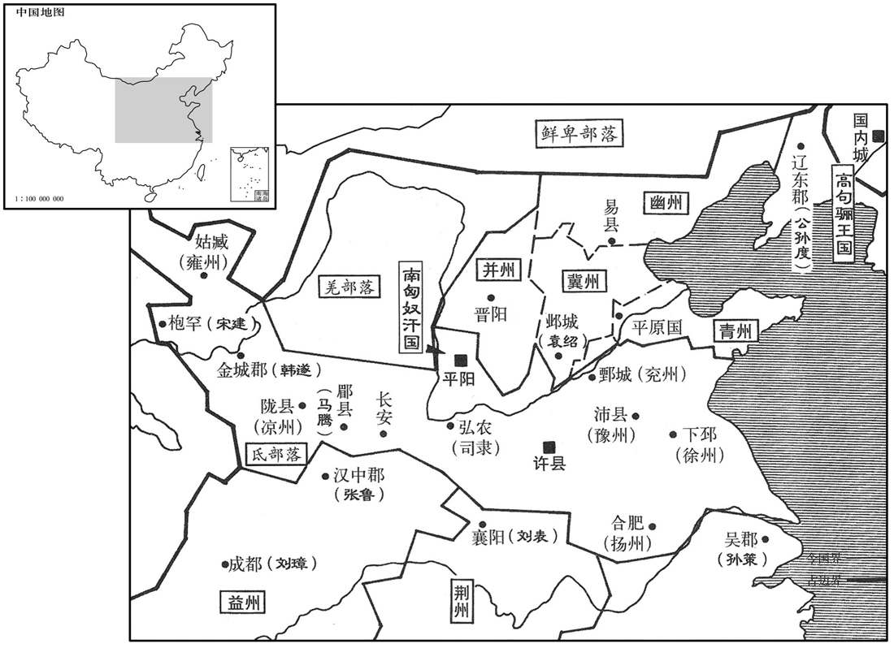
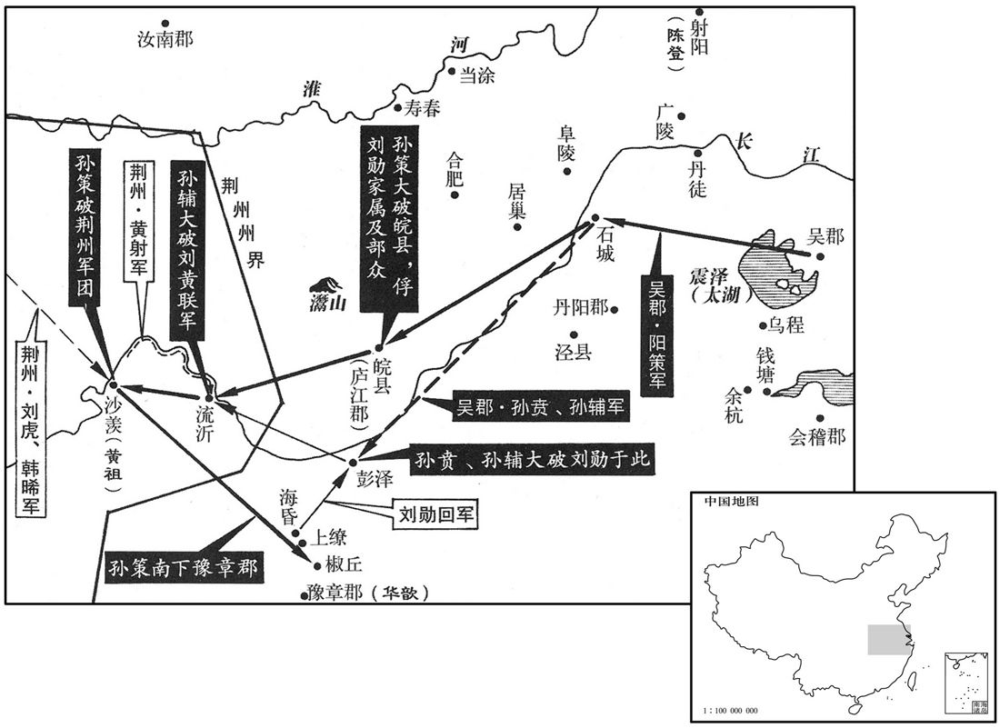
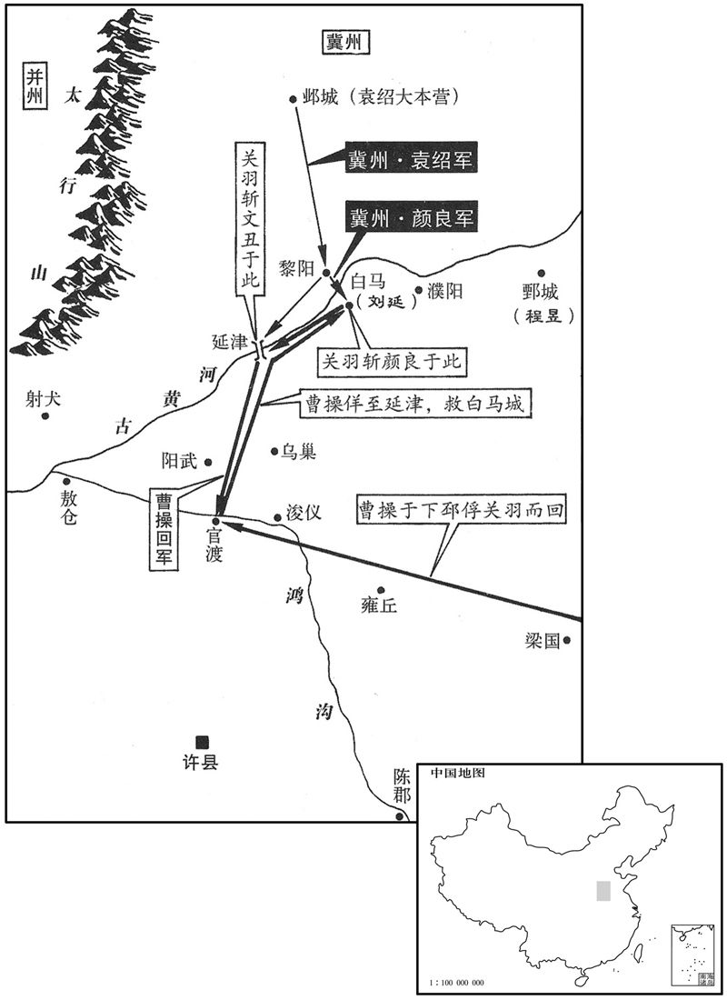
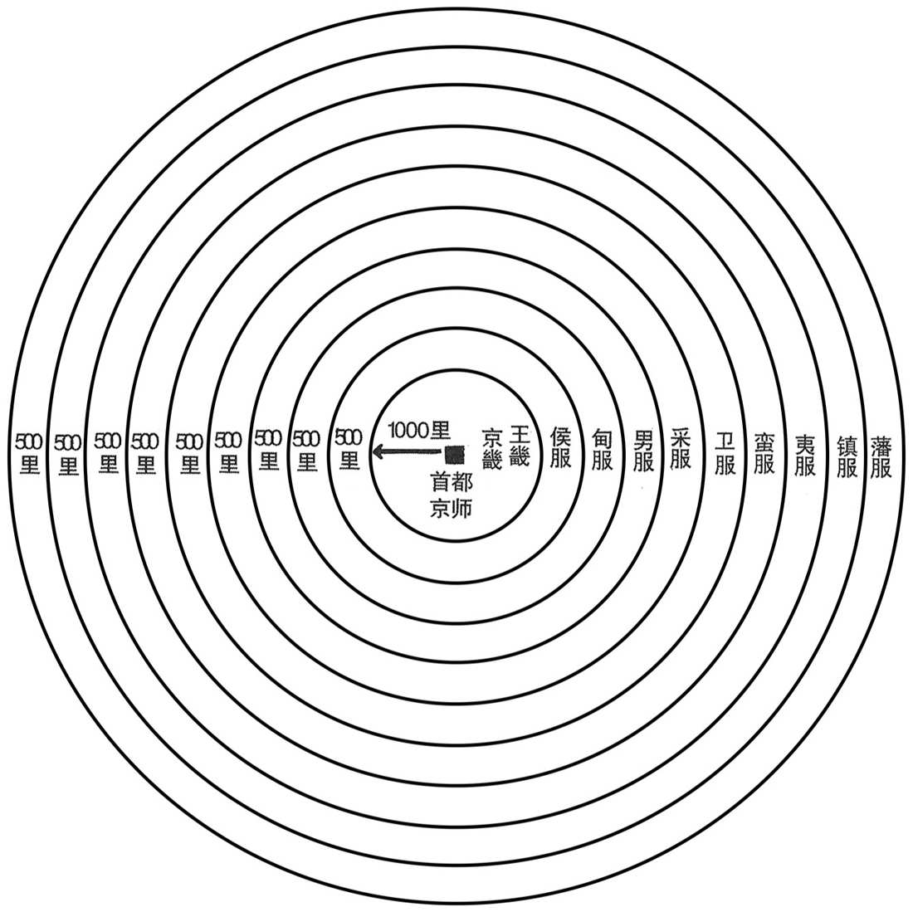
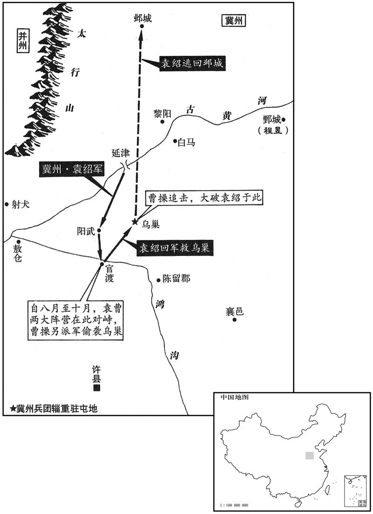

卷次与人物目录 / 卷63
资治通鉴 · 卷第六十三【汉纪五十五】
公元199年至公元200年 · 原文、白话与胡三省注
本页按胡注本编排保存全卷内容。白话采用本站所据译本，未可靠对应的内容另列说明；事件标题用于定位，并非原书文字。
本卷共73段原文，73段有译文对应，0段缺译或待核对。
卷第六十三【汉纪五十五】起屠维单阏（己卯），尽上章执徐（庚辰），〕凡二年。
卷首原文与注释
孝献皇帝戊
公元199年 · 汉孝献皇帝建安四年
建安四年〔（己卯、一九九）〕
上传原文的注释括号有异常，字符原样保留；无法可靠划分的段落默认全文显示。
本年事件索引（现代整理）
- 袁绍攻破易京，公孙瓒自焚，田楷战死
- 鲜于辅听从田豫建议归附曹操
- 蹋顿统摄乌桓各部，袁绍借其兵灭公孙瓒
- 曹操击杀眭固，收复射犬
- 曹操擒获魏种后不计前嫌，任其为河内太守
- 董承任车骑将军
- 袁术众叛亲离，欲归帝号于袁绍后病死
- 袁绍诛杀劝其称帝的耿包以平息众怒
- 沮授劝袁绍持久伐曹，郭图等促其速战
- 荀彧分析袁绍多疑失人，曹操法度严明用人有方
- 曹操屯兵官渡，防备袁绍
- 贾诩劝张绣归附曹操，张绣率众投降
- 杨阜判断曹操必成大业，劝关中诸将归附
- 卫觊建议屯田、复盐官以安定关中，曹操采纳
- 韩嵩劝刘表归附曹操，刘表仍犹豫不决
- 刘晔斩杀郑宝，收其部众交给刘勋
- 刘勋中孙策诱计攻上缭，回师后被孙策击败
- 孙策大破黄祖援军，缴获战船六千艘
- 孙策兵临豫章，华歆开城归降
- 孙盛批评华歆未守臣节，降服孙策
- 孙策分置庐陵、豫章二郡
- 孙策善待袁术、刘繇家属，获士人称赞
- 吴夫人阻止孙策杀魏腾，劝其以宽待士
- 孙策攻破邹佗等部，却宽免守义的许昭
- 曹操侍卫许褚识破密谋，杀死徐他等刺客
- 董承受密诏谋诛曹操，刘备借机脱离曹操
春，〔【章：甲十一行本「春」下有「三月」二字；乙十一行本同；张校同。】〕黑山贼帅张燕与公孙续率兵十三万，三道救之。〔帅，所类翻。〕未至，瓒密使行人赍书告续，使引五千铁骑于北隰之中，〔贤曰：下湿曰隰。孔颖达曰：下湿，谓土地窊下，常沮洳，名为隰也。〕起火为应，瓒欲自内出战。绍候得其书，如期举火。瓒以为救至，遂出战。绍设伏击之，瓒大败，复还自守。〔复，扶又翻。〕绍为地道，穿其楼下，施木柱之，度足达半，便烧之，楼辄倾倒，稍至京中。〔柱，拄也。易之中京，瓒所居也。度，徒洛翻。〕瓒自计必无全，乃悉缢其姊妹、妻子，然后引火自焚。绍趣兵登台，斩之。〔缢，于赐翻，又于计翻。趣，读曰促。〕田楷战死。关靖叹曰：「前若不止将军自行，未必不济。吾闻君子陷人危，必同其难，〔难，乃旦翻。〕岂可以独生乎！」策马走绍军而死。〔公孙瓒之计与陈宫之计，一也。陈宫之计，吕布不能用；公孙瓒之计，关靖止之：是知不惟决计之难，赞决者亦难也。〕续为屠各所杀。〔屠各，胡也。屠，直于翻。〕
春季，黑山军首领张燕与公孙续率兵十万，分三路援救公孙瓒，张燕的援军还未到，公孙瓒秘密派使者送信给公孙续，让他率五千铁骑到北方低洼地区埋伏，点火作为信号，公孙瓒打算自己出城夹击袁绍围城部队。袁绍的巡逻兵得到这封书信，袁绍就按期举火，公孙瓒以为援军已到，就率军出战。袁绍的伏兵发动进攻，公孙瓒大败，回城继续坚守。袁绍围城部队挖掘地道，挖到公孙瓒部队固守的城楼下，用木柱撑住，估计已挖到城楼的一半，便纵火烧毁木柱，城楼就倒塌了。袁绍用这种方法逐渐攻到公孙瓒所住的中京。公孙瓒自料必定不能幸免，就绞死自己的姊妹、妻子儿女，然后放火自焚。袁绍催促士兵登上高台，斩公孙瓒。田楷战死。关靖叹息说：“以前，如果不是我阻止将军自己出城，未必没有希望。我听说君子使别人陷入危难时，自己一定与他分担患难，怎么能自己独自逃生呢！”就骑马冲入袁绍军中而死。公孙续被匈奴屠各部杀死。
渔阳田豫说太守鲜于辅曰：〔辅既斩邹丹，遂领渔阳太守。说，输芮翻。守，式又翻。〕「曹氏奉天子以令诸侯，终能定天下，宜早从之。」辅乃率其众以奉王命。诏以辅为建忠将军，都督幽州六郡。
渔阳人田豫劝告本郡太守鲜于辅说：“曹操尊奉天子来号令诸侯，最终能够平定天下，应该早早归顺他。”鲜于辅于是率领部下归附朝廷。献帝下诏任命鲜于辅为建忠将军，都督幽州六郡军务。
初，乌桓王丘力居死，子楼班年少，从子蹋顿有武略，代立，〔少，诗照翻。从子蹋顿有武略之，代立，〔少，诗照翻。从，才用翻；下同。贤曰：蹋，音大蜡翻。杨正衡晋书音义：蹋，徒合翻。〕总摄上谷大人难楼、辽东大人苏仆延、右北平大人乌延等。袁绍政公孙瓒，蹋顿以乌桓助之。瓒灭，绍承制皆赐蹋顿、难楼、苏仆延、乌延等单于印绶；又以阎柔得乌桓心，因加宠慰以安北边。其后难楼、苏仆延奉楼班为单于，以蹋顿为王，然蹋顿犹秉计策。
起初，乌桓王丘力居死后，他的儿子楼班年龄还小，侄儿蹋顿勇武善战，富有谋略，就接替了丘力居的王位，总领上谷大人难楼、辽东大人苏仆延、右北平大人乌延等。袁绍进攻公孙瓒时，蹋顿率领乌桓人帮助袁绍。公孙瓒灭亡后，袁绍用皇帝的名义对蹋顿、难楼、苏仆延、乌延等都赐予单于印绶。袁绍又因为阎柔受到乌桓人敬重，对阎柔待遇特别优厚，以求得北方连境的安定。后来，难楼、苏仆延共同尊奉楼班为单于，以蹋顿为王，但实际事务仍由蹋顿掌管。
眭固屯射犬，〔郡国志：河内野王县有射犬聚。唐怀州河内县有汉射犬故城。眭，息随翻。〕夏，四月，曹操进军临河，使将军史涣、曹仁渡河击之。仁，操从弟也。固自将兵北诣袁绍求救，与涣、仁遇于犬城，涣、仁击斩之。操遂济河，围射犬；射犬降，〔降，户江翻。〕操还军敖仓。
眭固驻军于射犬。夏季，四月，曹操进军到黄河岸边，派将军史涣、曹仁渡过黄河，进攻眭固。曹仁是曹操的堂弟。眭固亲自率军北上向袁绍求援，在犬城与史涣、曹仁相遇，史涣、曹仁进击，杀死眭固。于是曹操亲统大军渡过黄河，围困射犬，射犬投降。曹军还驻敖仓。
初，操在兖州举魏种孝廉。〔种，音冲。〕兖州叛，〔张邈举兖州附吕布事见六十一卷兴平元年。〕操曰：「唯魏种且不弃孤。」及闻种走，操怒曰：「种不南走越、北走胡，不置汝也！」既下射犬，生禽种，操曰：「唯其才也！」释其缚而用之，以为河内太守，属以河北事。〔属，之欲翻。〕
当初，曹操在兖州推荐魏种为孝廉。兖州反叛时，曹操说：“只有魏种不会辜负我。”及至听到魏种逃走的消息，曹操大怒，说：“你魏种不逃到南越、北胡，我就不放过你！”攻下射犬以后，生擒魏种，曹操说：“只因为他有才干！”解开捆绑他的绳索，任用他为河内郡太守，让他负责黄河以北的事务。
以卫将军董承为车骑将军。
任命卫将军董承为车骑将军。
袁术既称帝，淫侈滋甚，媵御数百，〔媵，以证翻。〕无不兼罗纨，厌粱肉，自下饥困，莫之收恤。既而资实空尽，不能自立，乃烧宫室，奔其部曲陈简、雷薄于灊山，〔灊县，属庐江郡，有天柱山。贤曰：灊县之山也。灊，今寿州霍山县也。灊，音潜。〕复为简等所拒，遂大穷，士卒散走，忧懑不知所为。〔复，扶又翻。懑，音闷。〕乃遣使归帝号于从兄绍〔绍与术同祖袁汤，以亲则从，以年则兄也。〕曰：「禄去汉室久矣，袁氏受命当王，符瑞炳然。今君拥有四州，〔贤曰：青冀、幽、并。〕人户百万，谨归大命，君其兴之！」袁谭自青州迎术，欲从下邳北过。曹操遣刘备及将军清河朱灵邀之，术不得过，复走寿春。六月，至江亭，坐箦床而叹曰：「袁术乃至是乎！」〔贤曰：箦，笫也；谓无茵席也。〕因愤慨结病，欧血死。术从弟胤畏曹操，不敢居寿春，率其部曲奉术柩及妻子奔庐江太守刘勋于皖城。〔皖县，属庐江郡，今舒州也。师古曰：皖，胡管翻；杜佑曰：音患。考异曰：吴志孙策传曰：「术死、长史杨弘、大将张勋等将其众，欲就策，庐江太守刘勋邀击，悉虏之，收其珍宝以归。」与诸书不同。今从范书、陈志术传及江表传。〕故广陵太守徐璆得传国玺，献之。〔璆，渠尤翻。传国玺，术拘孙坚妻所夺者。玺，斯氏翻。〕
袁术称帝后，奢靡贪淫的程度比以前更厉害，后宫妃嫔有数百人，无不身穿绫罗绸缎，饱食精美的饭菜。属下将士饥饿困苦，他却毫不并心。不久，储存的各种物资都已耗尽，自己无法维持，于是烧毁宫殿，去投奔驻在山的部将陈简、雷薄，但又遭到陈简等的拒绝。于是袁术大为困窘，部下士兵不断逃走。他心中忧虑烦闷，无计可施，只好派人把皇帝的尊号送给他的堂兄袁绍，说：“汉朝王室的气数久已尽了，袁氏应当接受天命为君王，符命与祥瑞都显示得很明白。如今您拥有四州的地盘，人口一百万户，我谨将上天授予的使命归献给您，请您复兴大业！”袁谭从青州来迎接袁术，想从下邳北方通过。曹操派遣刘备及将军、清河人朱灵率军进行拦截，袁术无法通过，再退回寿春。六月，袁术到达江亭，坐在只辅着竹席的床上，叹息说：“我袁术竟落到这个地步吗！”气愤感慨成病，吐血而死。袁术的堂弟袁胤害怕曹操，不敢留在寿春，率领部曲带着袁术的灵柩与家眷，投奔驻在皖城的庐江太守刘勋。前任广陵郡太守徐得到传国御玺，献给朝廷。
袁绍既克公孙瓒，心益骄，贡御稀简。主簿耿包密白绍，宜应天人，称尊号。绍以包白事示军府。〔白事，所白之事也。〕僚属皆言包妖妄，宜诛，〔妖，于骄翻。〕绍不得已，杀包以自解。
袁绍消灭公孙瓒后，更加骄横，对朝廷进贡的次数和数量减少。主簿耿包秘密向袁绍建议，应当应天顺民，即位称帝。袁绍把耿包的建议告诉军府的官员，官员们一致认为耿包大逆不道，应该斩首。袁绍不得已，杀掉耿包以表白自己无意称帝。
绍简精兵十万、骑万匹，欲以攻许。沮授谏曰：「近讨公孙瓒，师出历年，百姓疲敝，仓库无积，未可动也。宜务农息民，先遣使献捷天子；若不得通，乃表曹操隔我王路，〔沮，子余翻。王路，谓尊王之路也。〕然后进屯黎阳，渐营河南，益作舟船，缮修器械，分遣精骑抄其边鄙，饮彼不得安，我取其逸，如此，可坐定也。」〔使绍能用授言，曹其殆乎！抄，楚交翻。郭图、审配曰：「以明公之神武，引河朔之强众，以伐曹操，易如覆手，〔易，以豉翻。〕何必乃尔！」授曰：「夫救乱诛暴，谓之义兵；恃众凭强，谓之骄兵；义者无敌，骄者先灭。〔前汉魏相上书曰：兵义者王，兵骄者灭。〕曹操奉天子以令天下，今举师南向，于义则违。且庙胜之策，不在强弱。曹操法令既行，士卒精练，非公孙瓒坐而受攻者也。今弃万安之术而兴无名之帅，〔前汉董公曰：兵出无名，事故不成。〔窃为公惧之！」〔为，于伪翻；下为之同。〕图、配曰：「武王伐纣，不为不义；况兵加曹操而云无名，且以公今日之强，将士思奋，不及时以定大业，所谓『天与不取，反受其咎』，〔使记范蠡之言。〕此越之所以霸，吴之所以灭也。监军之计在于持牢，〔绍使授监护诸将，故称为监军。持牢，犹今南人言把稳也。监，古衔翻。〕而非见时知几之变也。」〔几，居衣翻。〕绍纳图言。图等因是谮授曰：「授监统内外，〔监，古衔翻。〕威震三军，若其寖盛，何以制之！夫臣与主同者亡，此黄石之所忌也。〔臣与主同，言作威作福与主无别也。黄石，即张良于下邳圮上所得之书也。〕且御众于外，不宜知内。」绍乃分授所统为都督，使授及郭图、淳于琼各典一军。骑都尉清河崔琰谏曰：「天子在许，民望助顺，不可攻也！」绍不从。
袁绍挑选了精兵十万，良马万匹，打算攻打许都。沮授劝阻他说：“近来讨伐公孙瓒，连年出兵，百姓疲困不堪，仓库中又没有积蓄，不能出兵。应当抓紧农业生产，使百姓休养生息。先派遣使者将消灭公孙瓒的捷报呈献天子，如果捷报不能上达天子，就可以上表指出曹操断绝我们与朝廷的联系，然后出兵进驻黎阳，逐渐向黄河以南发展。同时多造船只，整修武器，分派精锐的骑兵去骚扰曹操的边境，使他不得安定，而我们以逸待劳，这样，坐着就可以统一全国。”郭图、审配说：“以您用兵如神的谋略，统率北方的强兵，去讨伐曹操，易如反掌，何必那样费事？”沮授说：“用兵去救乱除暴，被称为义兵；倚仗人多势众，被称为骄兵。义兵无敌，骄兵先亡。曹操尊奉天子以号令天下，如今我们要是举兵南下，就违背了群臣大义。而且，克敌制胜的谋略，不在于强弱。曹操法令严明，士兵训练有素，不是公孙瓒那样坐等被打的人。如今要舍弃万全之计而出动无名之师，我为您担忧！”郭图、审配说：“周武王讨伐商纣王，并不是不义；何况我们是讨伐曹操，怎么能说是师出无名？而且以您今天的强盛，将士们急于立功疆场，不乘此时机奠定大业，就正像古人所说的：‘不接受上天给予的赏赐，就会反受其害。’这正是春秋时期越国所以兴盛，吴国所以灭亡的原因，监军沮授的计策过于持重，不是随机应变的谋略。”袁绍采纳了郭图等的意见。郭图等乘机向袁绍讲沮授的坏话，说：“沮授总管内外，威震三军，如果势力逐渐扩张，将怎样控制他！臣下的权威与君主一样，就一定会灭亡，这是兵书《黄石》指出的大忌。而且统军在外的人，不应同时主持内部政务。”袁绍就把沮授所统领的军队分为三部分，由三位都督指挥，派沮授、郭图与淳于琼各统一军。骑都尉、清河人崔琰劝阻袁绍说：“天子在许都，民心倾向于那边，不能进攻！”袁绍不听。
许下诸将闻绍将攻许，皆惧，曹操曰：「吾知绍之为人，志大而智小，色厉而胆薄，忌克而少威，〔少，诗沼翻；下以少同。〕兵多而分画不明，将骄而政令不壹，〔将，即亮翻。〕土地虽广粮食虽丰，适足以为吾奉也。」孔融谓荀彧曰：「绍地广兵强，田丰、许攸智士也为之谋，审配、逢纪忠臣也，〔皮，翻。〕任其事，〔任，音壬。〕颜良、文丑勇将也统其兵，殆难克乎！」彧曰：「绍兵虽多而法不整，田丰刚而犯上，许攸贪而不治，审配专而无谋，逢纪果而自用，此数人者，势不相容，必生内变。颜良、文丑，一夫之勇耳，可一战而禽也。」
许都的将领们听说袁绍要来进攻，都心中害怕。曹操说：“我知道袁绍的为人，志向很大而智谋短浅，外表勇武而内心胆怯，猜忌刻薄而缺少威信，人马虽多而调度无方，将领骄横而政令不一，他的土地虽然广大，粮食虽然丰足，却正好是为我们预备的。”孔融对荀说：“袁绍地广兵强，有田丰、许攸这样的智士为他出谋划策，审配、逢纪这样的忠臣为他办事，颜良、文这样的勇将为他统领军队，恐怕难以战胜吧！”荀说：“袁绍的兵马虽多，但法纪不严。田丰刚直，但昌犯上司；许攸贪婪，又治理无方；审配专权，却没有谋略；逢纪处事果断，但自以为是。这几个人，势必不能相容，一定会生内讧。颜良、文不过是匹夫之勇，一仗就可以捉住他们。”
秋，八月，操进军黎阳，使臧霸等将精兵入青州以扞东方，〔臧霸起于泰山，称雄于东方者也，故使之为扞；袁氏虽欲自平原而东，无能为矣。〕留于禁屯河上。九月，操还许，分兵守官渡。〔贤曰：裴松之北征记曰：中牟台，下临汴水，是为官渡，袁绍、曹操垒尚存焉。在今郑州中牟县北。据水经注，汴水即莨荡渠也。杜佑曰：郑州中牟县北十二里，有中牟台，是为官渡城，袁、曹相持之持。〕
秋季，八月，曹操进军黎阳，派臧霸等充领精兵，到青州去保卫东方边境，留于禁驻扎在黄河之畔。九月，曹操返回许都，分兵驻守官渡。
袁绍遣人招张绣，并与贾诩书结好。绣欲许之，诩于绣坐上〔好，呼到翻。坐，徂卧翻。〕显谓绍使曰：「归谢袁本初，兄弟不能相容，〔谓与袁术有隙，各结党与以相图也。显者，明言之于稠人中也。〕而能容天下国士乎！」绣惊惧曰：「何至于此！」窃谓诩曰：「若此，当何归﹖」诩曰：「不如从曹公。」绣曰：「袁强曹弱，又先与曹为雠，〔谓淯水之战，杀其子也。〕从之如何﹖」诩曰：「此乃所以宜从也。夫曹公奉天子以令天下，其宜从一也；绍强盛，我以少众从之，〔少，诗沼翻；下同。〕必不以我为重，曹公众弱，其得我必喜，其宜从二也；夫有霸王之志者，固将释私怨以明德于四海，其宜从三也。愿将军无疑！」冬，十一月，绣率众降曹操，〔降，户江翻。〕操执绣手，与欢宴，为子均取绣女，〔为，于伪翻。取，读曰娶。〕拜扬武将军；表诩为执金吾，封都亭侯。〔凡郡、国、县、道治所，皆有都亭。〕
袁绍派使者去拉拢张绣，并给张绣的谋士贾诩写信，表示愿与贾诩结交。张绣打算答应袁绍。贾诩在张绣招待袁绍使者时，高声对使者说：“请回去为我们谢谢袁绍的好意，他与兄弟袁术不能相容，而能容天下的英雄豪杰吗！”张绣又惊又怕，说：“怎么至于这样！”他悄悄地对贾诩说：“像现在这样，咱们应当依靠谁？”贾诩说：“不如依靠曹操。”张绣说：“袁绍势力雄厚，曹操势单力孤，而且我们以前又与曹操结过怨仇，怎么归附他呢？”贾诩说：“正因为如此，才应当归附曹操。曹操尊奉天子以号令天下，名正言顺，这是应该归附的第一条理由。袁绍强盛，我们以不多的人马去投靠他，必定不会受到重视；而曹操势单力薄，得到我们必然十分高兴，这是应该归附的第二条理由。抱有称霸天下大志的人，一定会抛弃私怨，以向四表明他的恩德，这是应该归附的第三条理由。希望将军不要疑虑。”冬季，十一月，张绣率部投降曹操。曹操握着张绣的手，与他一起欢宴，为儿子曹均娶张绣的女儿为妻。任命张绣为扬武将军；上表推荐贾诩担任执金吾，封都亭侯。
关中诸将以袁、曹方争，皆中立顾望。凉州牧韦端使从事天水杨阜诣许，阜还，关右诸将问：「袁、曹胜败孰在﹖」阜曰：「袁公宽而不断，好谋而少决；不断则无威，〔断，丁乱翻；下同。〕少决则后事，今虽强，终不能成大业。曹公有雄才远略，决机无疑，法一而兵精，能用度外之人，所任各尽其力，必能济大事者也。」
关中地区的将领们看到袁绍与曹操正在争斗，都保持中立，坐观成败。凉州牧韦端派遣从事、天水人杨阜前往许都，杨阜返回后，关中将领们问他：“袁绍与曹操相争，将会谁胜谁败？”杨阜说：“袁公宽容而不果断，好谋而迟疑不决；不果断就没有威信，迟疑不决就会错过时机，如今虽强，但终究不能成就大业。曹公有雄才大略，当机立断，毫不迟疑，法令统一，兵强马壮，能不拘一格地任用人才，部下各尽其力，一定能成就大业。”

曹操使治书侍御史河东卫觊镇抚关中，〔治，直之翻。觊，音冀。〕时四方大有还民，关中诸将多引为部曲。觊书与荀彧曰：「关中膏腴之地，顷遭荒乱，人民流入荆州者十万余家，闻本土安宁，皆企望思归；〔企，去智翻，举踵也。〕而归者无以自业，诸将各竞招怀以为部曲，郡县贫弱，不能与争，兵家遂强，一旦变动，必有后忧夫盐，国之大宝也，乱来放散宜如旧置使者监卖，〔监，古衔翻；下同。〕以其直益市犁牛，若有归民，以供给之，勤耕积粟以丰殖关中，远民闻之，必日夜竞还。又使司隶校尉留治关中以为之主，〔治，直之翻。〕则诸将日削，官民日盛，此强本弱敌之利也。」彧以白操，操从之。始遣谒者仆射监盐官，〔河东安吧盐池，旧有盐官。盐之为利厚矣，齐用管子鬻筴而霸；晋之定都，诸大夫必欲其近盐；至汉武之世，斡之以佐军兴；及唐安、史之乱，第五琦榷盐以赡国用；自此遂为经赋，其利居天下岁入之半，监，工衔翻。〕司隶校尉治弘农。〔时以锺繇为司隶校尉。据魏略及三国志，繇实治洛阳，盖暂治弘农，以招抚关中也。〕关中由是服从。
曹操派治书侍御史、河东人卫觊镇抚关中地区。当时有许多难民归来，关中的将领们大多把他们收容下来，作为部曲。卫觊写信给荀说：“关中土地肥沃，不久前遭受战乱，百姓流入荆州的有十万余家。听说家乡安宁，都盼望返回故乡。但回乡的人无法自立谋生，将领们争相招揽他们，作为部曲。郡、县贫弱，没有力量与将领们抗拒，于是将领们势力扩大，一旦发生变故，必然会有后患。盐，是国家的重要财富，战乱以来无人管理，应当依照过去的制度，设置使者负责专卖，用专卖的收入去购买农具、耕牛，如果有返乡的百姓，就供应他们，让他们辛勤耕作，广积粮食，使关中富裕起来。流亡远方的百姓知道后，必定不分昼夜地争着归来。还应该让司隶校尉留驻关中，主持关中地区事务。这样，将领们的势力就会日益削弱，官府与百姓就会日益强盛，这是强固根本，削弱敌人的好办法。”荀把卫觊的建议报告给曹操，被曹操采纳。于是开始派遣谒者仆射主管盐政事务，监督专卖，将司隶校尉的官署设在弘农。关中地区从此受到朝廷控制。
袁绍使人求助于刘表，表许之而竟不至，亦不援曹操。从事中郎南阳韩嵩、〔汉制，惟司隶校尉有从事中郎，至汉末，则州牧亦有从事中郎矣。〕别驾零陵刘先说表曰：〔说，输芮翻。〕「今两雄相持，天下之重在于将军。若欲有为，起乘其敝可也；如其不然，固将择所宜从。岂可拥甲十万，坐观成败，求援而不能助，见贤而不肯归！此两怨必集于将军，恐不得中立矣。曹操善用兵，贤俊多归之，其势必举袁绍，然后移兵以向江、汉，恐将军不能御也。今之胜计，〔胜计，谓诸计之中，此计为胜也。〕莫若举荆州以附曹操，操必重德将军；长享福祚，垂之后嗣，此万全之策也。」蒯越亦劝之，〔蒯，苦怪翻。〕表狐疑不断，乃遣嵩诣许曰：「今天下未知所定，而曹操拥天子都许，君为我观其衅。」〔为，于伪翻；下同。〕嵩曰：「圣达节；次守节。〔左传，曹公子欣时之言。〕嵩，守节者也。夫君臣名定，以死守之；今策名委质，〔质，如字。〕唯将军所命，虽赴汤蹈火，死苶辞也。以嵩观之，曹公必得志于天下。将军能上顺天子，下归曹公，使嵩可也；如其犹豫，嵩至京师，天子假嵩一职，不获辞命，则成天子之臣，将军之故吏耳。在君为君，则嵩守天子之命，义不得复为将军死也。惟加重思，〔为，于伪翻。重，除用翻。重思，犹言三思也。〕无为负嵩！」表以为惮使，强之。〔以其惮于使许，强之使行。使，疏吏翻。〕至许，诏拜嵩侍中、零陵太守。及还，盛称朝廷、曹公之德，劝表遣子入侍。表大怒，以为怀贰，大会寮属，陈兵，持节，将斩之，〔持节，以示将斩，犹不敢专杀，存汉制也。〕数曰：「韩嵩敢怀贰邪！」众皆恐，欲令嵩谢。嵩不为动容，〔数，所具翻。为，于伪翻。〕徐谓表曰：「将军负嵩，嵩不负将军！」且陈前言。表妻蔡氏谏曰：「韩嵩，楚国之望也；且其言宜，诛之无辞。」表犹怒，考杀从行者，〔从，才用翻；下同。〕知无他意，乃弗诛而囚之。
袁绍派使者向荆州牧刘表请求援助，刘表应许他的请求，但援军始终不到，而他也不帮助曹操。从事中郎、南阳人韩嵩和别驾、零陵人刘先劝刘表说：“如今袁绍、曹操两雄相持，天下的重心在于将军。如果您想有所作为，可以乘他们斗得两败俱伤时起兵；如果没有那个意思，就应当选择所应归附的对象，进行援助。怎么能拥兵十万，坐观成败，遇到求援而不能相助，看见贤能的人而不肯归附！这样，双方的怨恨必定都集中到您身上，您恐怕就不能中立了。曹操善于用兵，贤才俊杰多为他效力，势必战胜袁绍，然后他再进军长江、汉水一带，恐怕将军您抵御不住。如今最好的办法，不如将荆州归附曹操，曹操一定会感激将军，将军就可以长享福运，并可传给后代，这是万全之策。”蒯越也劝刘表这样作，刘表犹豫不决，于是派韩嵩前往许都，对韩嵩说：“如今天下不知谁能最后胜利，而曹操拥戴天子，建都于许县，你为我去观察一下那里的形势。”韩嵩说：“圣人可以通达权变，次者只能严守节操。我是个守节的人，君臣名分一定，就以死守之。如今我作为将军的僚属，只服从您的命令，赴汤蹈火，虽死不辞。据我看来，曹操一定会统一天下。如果将军能上尊天子，下归曹操，就可以派我出使许都；如果将军犹豫不决，我到京城，万一天子授予我一个官职，又无法辞让，则我就成为天子之臣，只是将军的旧部了。既成为天子的臣属，便遵奉天子的命令，在大义上就不能再为将军效命了。请您三思，不要辜负了我的一腔忠诚！”刘表以为韩嵩害怕出使到许都，就强迫他去。韩嵩到达许都，献帝下诏，任命韩嵩为侍中、零陵郡太守。韩嵩从许都返回后，盛赞朝廷与曹操的恩德，劝刘表把儿子送到朝廷做人质。刘表大怒，认为韩嵩有二心，就召集全体僚属，排列武士，手持代表天子权力的符节，打算杀死韩嵩。刘表责问韩嵩说：“韩嵩，你竟敢怀有二心吗！”大家都为他担心，劝他向刘表谢罪。韩嵩不动声色，态度从容地对刘表说：“是将军辜负了我，我并没有辜负将军！”就把自己以前说过的话又重复了一遍。刘表的妻子蔡氏劝告刘表说：“韩嵩是楚地有名望的人士，而且他的话有理，杀他没有罪名。”刘表仍然怒气不息，用重刑拷问跟随韩嵩出使的官员，有的被拷打致死，终于知道韩嵩没有背叛自己的意思，就未杀韩嵩，而把他囚禁起来。
扬州贼帅郑宝欲略居民以赴江表，〔帅，所类翻；下同。〕以淮南刘晔，高族名人，〔晔出于汉之宗室，与蒋济、胡质俱为扬州名士。〕欲劫之使唱此谋，晔患之。会曹操遣使诣州，有所案问，晔要与归家。〔要，读曰邀。〕宝来候使者，晔留与宴饮，手刃杀之，斩其首以令宝军曰：「曹公有令，敢有动者，与宝同罪！」其众数千人皆詟服，〔詟，即涉翻，失气也。〕推晔为主。晔以其众与庐江太守刘勋，勋怪其故，晔曰：「宝无法制，其众素以钞略为利；仆宿无资，〔谓先无名位为之资也。钞，楚交翻。〕而整齐之，必怀怨难久，故以相与耳！」〔天下殽乱之时，设有不幸为众推，当以刘晔为法。〕勋以袁术部曲众多，不能赡，遣从弟偕求米于上缭诸宗帅，不能汉数，〔不满其所求之数也。缭，读曰僚。〕偕召勋使袭之。
扬州地区叛匪首领郑宝打算裹胁百姓到长江以南，他认为淮南人刘晔出身皇族，本人名望又高，准备劫持刘晔，以刘晔的名义来发动此事，刘晔对此很忧虑。正好曹操派遣使者到扬州来调查一件事情，刘晔就邀请使者同自己一道回家。郑宝前来拜见使者，刘晔留他参加宴会。在宴会上，刘晔亲手用刀杀死郑宝，砍下他的头颅。然后，拿着郑宝的人头，命令郑宝的部下：“曹公有命令，胆敢不服从命令的，与郑宝同罪。”郑宝部下有数千人，都被镇服，推举刘晔作首领。刘晔把这数千人交给庐江郡太守刘勋，刘勋很奇怪，询问原因。刘晔说：“郑宝军中没有纪律，部众向来靠抢掠百姓取利。我一向没有资才，而又要对他们进行整编，必然会引起怨恨，局面难以持久，所以把这些人交给您管辖。”刘勋因为收容袁术的部属太多，粮草供应不上，就派遣堂弟刘偕向上缭的宗党首领们征集粮草。上缭宗党首领们未能满足刘偕的要求，刘偕就通知刘勋，请他派兵进行袭击。
孙策恶勋兵强，伪卑辞以事勋曰：「上缭宗民数欺鄙郡，〔恶，乌路翻。数，所角翻。〕欲击之，路不便。上缭甚富实，愿君伐之，请出兵以为外援。」且以珠宝、葛越赂勋。〔文选注曰：葛越，草布也。今葛布谓之葛越，白布谓之白越。〕勋大喜，外内尽贺，刘晔独否，勋问其故，对曰：「上缭虽小，城坚池深，攻难守易，〔易，以豉翻。〕不可旬日而举也。兵疲于外而国内虚，策乘虚袭我，则后不能独守。是将军进屈于敌，退无所归，若军必出，祸今至矣。」勋不听，遂伐上缭；至海昏宗帅知之，皆空壁逃迁，勋了无所得。时策引兵西击黄祖，行及石城，〔海昏县，属豫章郡，当豫章大江之口，有地名慨口。永元中，分海昏置建昌县。上缭，在建昌界。石城县，属丹杨郡。贤曰：在今苏州西南。余据水经：石城县在牛渚东。郦道元注又云：牛渚在石城东减五百里。未知孰是。又据五代志，宣城秋浦县，旧曰石城。宋白曰：池州贵池、石埭二县，皆汉石城县之地。〕闻勋在海昏，策乃分遣从兄贲、辅将八千人屯彭泽，〔宋白曰：彭泽县，取彭蠡泽为名，汉属豫章郡，今江州彭泽县、南康军都昌县皆汉彭泽县地。〕自与领江夏太守周瑜将二万人袭皖城，克之，〔夏，户雅翻。皖，户版翻。〕得术、勋妻子及部曲三万余人；表汝南李术为庐江太守，给兵三千人以守皖城，〔为本术不附孙氏张本。〕皆徙所得民东诣吴。勋还至彭泽，孙贲、孙辅邀击，跛之。勋走保流沂，〔流沂，地名，近西塞。西塞山，在今寿昌军东北三十里。〕求救于黄祖，祖遣其子射率船军五千人助勋。〔船军，即舟师也。〕策复就攻勋，〔复，扶又翻；下同。〕大破之。勋北归曹操，射亦遁走。
会稽郡太守孙策对刘勋的强大势力颇为忌惮，假装言辞谦卑地对刘勋表示顺服说：“上缭的宗党民众，屡次欺负本郡，我打算进攻他们，但路远不便。上缭很为富庶，希望您进兵讨伐，我愿出兵作为外援。”并用珠宝和葛布来贿赂刘勋。刘勋大喜，内外一致向他祝贺，只有刘晔不以为然。刘勋问他原因，刘晔说：“上缭虽小，但城堡坚固，壕沟深广，易守难攻，不会在十天之内攻克。大军被困在坚城之下而后方空虚，如果孙策乘虚袭击我们，后方便难于自守。这样，则将军进不能攻陷敌城，退又无家可归。因此，如果大军一定要出，灾祸今天就会到来。”刘勋不听，于是讨伐上缭。大军到达海昏，宗党首领听到风声，全都赶快逃跑，只留下空城，刘勋什么也没有抢到。这时，孙策率兵向西进攻黄祖，走到石城，听说刘勋在海昏，就分派堂兄孙贲、孙辅率领八千人驻在彭泽，自己与兼任江夏郡太守的周瑜率领二万人袭击刘勋的根据地皖城，攻克该城，俘虏了袁术与刘勋的家眷以及部曲三万余人。孙策上表推荐汝南人李术担任庐江郡太守，拨给他三千士兵，守卫皖城，把其余被俘的人都东迁到自己控制的吴郡。刘勋率军返回，到达彭泽，受到孙贲、孙辅的截击，大败。刘勋退守流沂，向黄祖求救，黄祖派儿子黄射率五千水军来援助刘勋。孙策再次前来进攻刘勋，刘勋大败，向北投奔曹操，黄射也逃走了。
策收得勋兵二千余人，船千艘，遂进击黄祖。十二月，辛亥，策军至沙羡，〔沙羡县，属江夏郡。晋灼曰：羡，音夷。水经注：蒲圻，江中有沙阳洲，沙阳县治。县本江夏之沙羡，晋太康中，改曰沙阳县。〕刘表遣从子虎及南阳韩晞，将长矛五千来救祖。〔从，才用翻。将，即亮翻。〕甲寅，策与战，大破之，斩晞。祖脱身走，获其妻子及船六千艘，〔艘，苏刀翻。〕士卒杀溺死者数万人。
孙策收编了刘勋部下的士兵二千余人，俘获了一千艘船只，乘势进攻黄祖。十二月，辛亥（初八），孙策进军到沙羡，刘表派遗遣侄子刘虎与大将南阳人韩，率领五千名手持长矛的士兵来救黄祖。甲寅（十一日），两军会战，孙策大败敌军，斩杀韩。黄祖脱身脱逃走，黄祖的家眷及战船六千艘被孙策俘获，黄祖部下士兵被杀死及淹死的有数万人。
策盛兵将徇豫章，屯于椒丘，〔椒丘，去豫章南昌县数十里。〕谓功曹虞翻曰：「华子鱼自有名字，〔华歆，字子鱼。自有名字，言其名闻当时也。〕然非吾敌也。若不开门让城，金鼓一震，不得无所伤害。卿便在前，具宣孤意。」翻乃往见华歆曰：「窃闻明府与鄙郡故王府君齐名中州，海内所宗，虽在东垂，常怀瞻仰。」歆曰：「孤不如王会稽。」〔王朗为会稽太守，为策所破。会，工外翻。〕翻复曰：「不审豫章资粮器仗，士民勇果，孰与鄙郡﹖」〔复，扶又翻。〕歆曰：「大不如也。」翻曰：「明府言不如王会稽，谦光之谭耳；〔易曰：谦尊而光。谭，与谈同。〕精兵不如会稽，实如尊教。」孙讨逆智略超世，用兵如神，前走刘扬州，君所亲见；〔刘扬州，谓刘繇。〕南定鄙郡，亦君所闻也。〔鄙郡，即谓会稽。〕今欲守孤城，自料资粮，已知不足，不早为计，悔无及也。今大军已次椒丘，仆便还去，明日日中迎檄不到者，与君辞矣。」歆曰：「久在江表，常欲北归；孙会稽来，吾便去也。」乃夜作檄，明旦，遣吏赍迎。策便进军，歆葛巾迎策。〔考异曰：华峤谱叙曰：「孙策略有扬州，盛兵徇豫章，一郡大恐，官属请出郊迎。歆曰：『无然。』策稍进，复白发兵。又不听。及策至，一府皆造合，请出避之，乃笑曰：『今将自来，何遽避之！』有顷，门下白曰：『孙将军至』，请见，乃前与歆共坐，谈议良久，夜乃别去。义士闻之，皆长叹而心自服也。」此说太不近人情，今不取。〕策谓歆曰：「府君年德名望，远近所归；策年幼稚，〔稚，直利翻。〕宜修子弟之礼。」便向歆拜，礼为上宾。
孙策统大军准备进攻豫章郡，驻扎在椒丘，他对功曹虞翻说：“华歆虽有名望，但不是我的对手。如果他不开门让城，一旦发动进攻，不会没有死伤。请你就在他的面前，讲明我的意思。”虞翻就先去拜见华歆，说：“听说您与我郡的前任太守王郎在中原地区都享有盛名，受到海内的一致尊崇，虽然我居住在偏远的东方，心中常常景仰。”华歆说：“我不如王朗。”虞翻又说：“不知豫章郡的粮草储存，武器装备以及民众的勇敢斗志，比我们会稽郡如何？”华歆说：“远远比不上。”虞翻说：“您说名望不如王朗，是谦虚之词；但兵力精强比不上会稽，则正如您的判断。孙将军智谋出众，用兵如神。以前，他攻破扬州刺史刘繇，是您亲眼所见；再向南平定我们会稽郡，您也一定有耳闻。如今，你要固守孤城，自己已知粮草不足，不早作打算，后悔就来不及了。现在孙将军大军已到椒丘，我这就回去，如果明天中牛迎接孙将军的檄文还没送到，我就不能与您再见了。”华歆说：“我久在江南，常想北归家乡，孙将军一到，我就离开。”于是，华歆连夜赶写迎接孙策的檄文，第二天一早，就派人送到孙策军前。孙策随即领军前进，华歆头戴葛巾，身着便装迎接孙策。孙策对华歆说：“您年高德劭，名满天下，深为远近人心所归；我年幼识浅，应当用子弟拜见长辈的礼节见您。”于是，孙策按照子弟的礼节拜见华歆，将华歆尊为上宾。

孙盛曰：歆既无夷、皓韬邈之风，又失王臣匪躬之操，〔夷、皓，谓伯夷、四皓也。易曰：「王臣蹇蹇，匪躬之故。」言华不能高尚其志，又失蹇蹇匪躬之节也。〕桡心于邪儒之说，交臂于陵肆之徒，位夺节堕，咎孰大焉！〔邪儒，谓虞翻；陵肆，谓孙策也。桡，奴教翻。堕，读曰隳。〕
孙盛曰：华歆既没有伯夷与商山四皓那样不慕荣利的高风亮节，又失去朝廷大臣尽忠忘私的操守，却屈从邪恶书生的游说，结交孙策那样的横行之徒，官位被夺，气节堕毁，有什么过错比这更大的呢！
策分豫章为庐陵郡，以孙贲为豫章太守，孙辅为庐陵太守。会僮芝病，辅遂进取庐陵，〔僮芝据庐陵事见上卷上年。〕留周瑜镇巴丘。〔裴松之曰：按孙策于时始得豫章、庐陵，尚未能得定江夏。瑜之所镇，应在今巴丘县也，与后所屯巴丘处不同。余据晋地理志，庐陵郡有巴丘县。沈约曰：晋立。今抚州崇仁�之县即其地梁改巴丘曰巴山。〕
孙策分豫章郡，另立庐陵郡，委任孙贲为豫章郡太守，孙辅为庐陵郡太守，恰好占据庐陵的僮芝有病，孙辅就进军攻取庐陵，留周瑜镇守巴丘。
孙策之克皖城也，抚视袁术妻子；及入豫章，收载刘繇丧，善遇其家。士大夫以是称之。
孙策攻克皖城时，安抚照顾袁术的妻子家小；等到他进入豫章，又运送刘繇的棺柩，厚待刘繇的家属。士大夫因此而称赞孙策。
会稽功曹魏腾尝迕策意，〔迕，五故翻。〕策母吴夫人倚大井谓策曰：「汝新新江南，其事未集，方当优贤礼士，舍过录功。魏功曹在公尽规，奴今日杀之，则明日人皆叛汝。吾不忍见祸之及，当先投此井中耳！」策大惊，遽释腾。
会稽郡功曹魏腾曾经得罪孙策，孙策要杀死他，众官员忧虑恐惧，却又无计可施。孙策的母亲吴夫人倚着大井的栏杆，对孙策说：“你刚刚开创江南的局面，诸事都还没有安顿，正应该礼贤下士，不念过失，只记功劳。魏功曹在公事上尽职尽责，你今天杀了他，那么明天别人都会背叛你。我不忍心见到大祸监头，应当先投到这个井里自尽！”孙策大惊，赶快释放魏腾。
初，吴郡太守会稽盛宪举高岱孝廉，许贡来领郡，岱将宪避难于营帅许昭家。乌程邹佗、钱铜及嘉兴王晟等〔难，乃旦翻。帅，所类翻。姓谱：彭祖裔孙孚，为周钱府上士，因官命氏。佗，徒河翻。沈约曰：嘉兴县，本名长水，秦改曰由拳；吴孙权黄龙四年，由拳县生嘉禾，改曰禾兴，孙皓避父名，改曰嘉兴县，属吴郡。晟，承正翻。〕各聚众万余或数千人，不附孙策。策引兵扑讨，皆破之，〔扑，普卜翻。〕进攻严白虎。白虎兵败，奔余杭，〔余杭县，前汉属会稽郡，后汉分属吴郡。〕投许昭。程普请击昭，策曰：「许昭有义于旧君，有诚于故友，此丈夫之志也。」〔裴松之曰：许昭有义于旧君，谓济盛宪也；有诚于故友，则受严白虎也。〕乃舍之。〔舍，读曰舍。〕
当初，吴郡太守、会稽人盛宪曾推荐高岱为孝廉，许贡来接管吴郡，高岱就把盛宪藏在营帅许昭家中避难。乌程人邹佗、钱铜以及嘉兴人王晟等，每人都拥有部众一万余人或数千人，不肯归附孙策。本年，孙策进军讨伐，将他们全部击破，就又挥军进讨严白虎。严白虎战败，逃到余杭，投奔许昭。孙策部将程普请求进击许昭，孙策说：“许昭对过去的长官有义，对老朋友有诚，这正是大丈夫应有的志气。”于是，没有进军去逼迫许昭。
曹操复屯官渡。〔复，扶又翻。〕操常从士徐他等谋杀操，〔常从士，常随从在左右者也。从，才用翻。他，徒何翻。〕入操帐，见校尉许褚，色变，褚觉而杀之。
曹操又进驻官渡。曹操身边的侍卫徐他等策划谋杀曹操。他们进入曹操的营帐，刚想动手，见到校尉许褚，脸色大变。许褚发觉，将徐他等杀死。
初，车骑将军董承称受帝衣带中密诏，与刘备谋诛曹操。操从容谓备曰：〔从，千容翻。〕「今天下英雄，惟使君与操耳，本初之徒，不足数也！」备方食，失匕箸；〔备以操知其英雄，惧将图己，故惊失匕筋也。匕，匙也；箸，挟也。箸，迟助翻。〕值天雷震，备因曰：「圣人云『迅雷风烈必变』，〔论语记孔子之容。〕良有以也。」遂与承及长水校尉种辑、将军吴子兰、王服等同谋。会操遣备与朱灵邀袁术，程昱、郭嘉、董昭皆谏曰：「备不可遣也！」操悔，追之，不及。术既南走，朱灵等还。备遂杀徐州刺史车冑，留关羽守下邳，行太守事，身还小沛。〔车，尺遮翻。考异曰：蜀志先叙董承谋泄诛死，备乃杀车冑。魏志，备杀车冑后，明年，董承乃死。袁纪，备据下邳亦在承死前。蜀志误也。〕东海贼昌豨及郡县多叛操为备。〔据蜀志，昌豨即昌霸。豨，许岂翻，又音希。吕布之败，太山诸屯帅皆降于曹操，独豨反侧于其间，盖自恃其才略过于臧霸之徒也。〕备众数万人，遣使与袁绍连兵，操遣司空长史沛国刘岱、中郎将扶风王忠击之，不克。备谓岱等曰：「使汝百人来，无如我何；曹公自来，未可知耳！」
当初，车骑将军董承声称接受了献帝衣带中的密诏，与刘备一起密谋刺杀曹操。一天，曹操从容地对刘备说：“如今天下的英雄，只有您和我罢了，袁绍之流，是算不上数的！”刘备正在吃东西，匙子和筷子跌落，正遇到天上打雷，刘备乘机说：“圣人说：‘遇到迅雷和暴风，使人改变脸色。’真是这样。”事后，刘备便与董承以及长水校尉种辑、将军吴子兰、王服等一同策划。这时，曹操派遣刘备与朱录去截击袁术，程昱、郭嘉、董昭等都劝阻曹操，说：“不可派遣刘备率兵外出！”曹操后悔，派人去追，没有追上。袁术既向南退回寿春，朱灵等班师加朝。刘备就杀死徐州刺史车胄，留关羽镇守下邳，代理下邳郡太守，自己回到小沛。车海乱匪首领昌以及其他郡县多背叛曹操，归附刘备。刘备拥有部众数万人，派使者与袁绍联系会师。曹操派遣司空长史、沛国人刘岱和中郎将、扶风人王忠率军进攻刘备，刘贷等失利。刘备对刘岱等人说：“像你们这样的，来上一百个，也不能把我怎么样；如果曹公亲自来，胜负就难以预料了。”
公元200年 · 汉孝献皇帝建安五年
五年〔（庚辰、二○○）〕
上传原文的注释括号有异常，字符原样保留；无法可靠划分的段落默认全文显示。
本年事件索引（现代整理）
- 董承谋泄，曹操诛杀董承、王服、种辑
- 曹操坚持先攻刘备，袁绍因子病错失袭许时机
- 曹操击败刘备、擒获关羽，刘备逃投袁绍
- 田丰劝袁绍持久围困曹操，袁绍不听并将其下狱
- 沮授预言袁绍骄兵将败，临行散财托付宗族
- 程昱以少兵固守鄄城，曹操赞其胆略
- 荀攸献计袭白马，关羽阵斩颜良解围
- 沮授劝袁绍留军延津策应，被夺兵权
- 曹操诱敌于延津，关羽阵斩文丑
- 关羽向曹操辞别归刘备，曹操不许部下追赶
- 曹操任鲜于辅为右度辽将军，镇抚幽州
- 孙策遇刺重伤，临终托付江东于孙权
- 张昭扶孙权理政，周瑜返吴共掌军政
- 皇子冯受封南阳王后去世
- 刘备助刘辟叛曹，李通拒绝袁绍招降
- 赵俨说服荀彧免征阳安百姓布帛，平定淮汝
- 何夔建议宽缓阳安赋役，曹操采纳
- 曹仁击败刘备，收复叛乱县邑
- 刘备再率兵援助汝南黄巾，曹操派军迎战
- 沮授劝袁绍缓进官渡，袁绍仍推进军营
- 日食
- 袁绍筑楼挖地道攻官渡，曹操粮尽与荀彧商议退兵
- 荀攸派徐晃截击韩猛，烧毁袁绍粮车
- 沮授建议派兵保护乌巢粮仓，袁绍不听
- 许攸献计分兵袭许未被采纳，因家人获罪转投曹操
- 许攸泄露乌巢粮仓位置，曹操夜袭焚粮
- 张郃主张救乌巢，袁绍却派重兵攻曹营
- 曹操亲自督战破乌巢，张郃、高览投降
- 袁绍军大溃，曹操追击缴获辎重、杀降军七万余人
- 沮授被俘不降，逃归袁绍未遂后被曹操处死
- 曹操焚毁搜得的袁绍往来书信，不追究私通者
- 袁绍逃至黎阳收拢败军，部众逐渐归附
- 袁绍听信逢纪谗言，杀害曾劝谏的田丰
- 袁绍保留审配守邺，冀州叛城逐渐平定
- 司马光认为袁绍虽宽雅有度，却刚愎自高而败
- 有星孛于大梁
- 刘馥治理扬州，安抚流民并修筑合肥防御
- 曹操不趁孙策之丧攻吴，表孙权为讨虏将军
- 张纮、张昭辅佐孙权稳固江东
- 周瑜推荐鲁肃，鲁肃劝孙权立足江东经营帝业
- 孙权整编部队，重用吕蒙
- 骆统劝孙权礼贤纳谏，孙权采纳
- 孙辅暗通曹操，孙权夺其兵权并迁置东部
- 孙权攻杀李术，收编其部众两万余人
- 刘表平定长沙等郡后僭越称制
- 张鲁杀张修并占据汉中，与刘璋交恶
- 赵韪借东州兵与益州百姓怨愤起兵反刘璋
春，正月，董承谋泄，壬子，曹操杀承及王服、种辑，皆夷三族。
春季，正月，董承的密谋败露。壬子（疑误），曹操杀死董承和王服、种辑，并将他们的三族全部屠灭。
操欲自讨刘备，诸将皆曰：「与公争天下者，袁绍也。今绍方来而弃之东，〔言绍方来寇，柔弃而顾而东征备也。〕绍乘人后，若何﹖」操曰：「刘备，人杰也，今不击，必为后患。」郭嘉曰：「绍性迟而多疑，来必不速。备新起，众心未附，急击之，必败。」操师遂东。冀州别驾田丰说袁绍曰：「曹操与刘备连兵，未可卒解。〔说，输芮翻。卒，读曰猝。〕公举军而袭其后，可一往而定。」绍辞以子疾，未得行。±豆举杖击地曰：「嗟乎！遭难遇之时，而以婴儿病失其会，惜哉，事去矣！」
曹操打算亲自出马讨伐刘备，将领们都说：“与您争夺天下的是袁绍，如今袁绍大军压境，而您却向东讨伐刘备，如果袁绍在背后进行攻击，怎么办？”曹操说：“刘备是人中豪杰，如今不进攻他，必定成为后患。”郭嘉说：“袁绍性情迟钝，而且多疑，即使来进攻，也必定不会很快。刘备刚刚创立基业，人心还没有完全归附，赶快进攻，一定能将刘备击败。”曹操于是挥师东征刘备。冀州别驾田丰邓袁绍说：“曹操与刘备交战，不会立即分出胜负，将军率军袭击他的后方，可以一举成功。”袁绍因儿子患病而推辞，未能出兵。田丰举杖击地说：“唉！遇到这种难得的机会，却因为婴儿的病而放弃，可惜啊，大事完了！”
曹操击刘备，破之，〔考异曰：魏书曰：「备谓操与大敌连，不得东；而候骑卒至，言曹公来，备大惊，然犹未信。自将数十骑出望公军，见麾旌，便弃众而走。」计备必不至此，魏书多妄。〕获其妻子；进拔下邳，禽关羽；又击昌豨，破之。备奔青州，因袁谭以归袁绍。绍闻备至，去邺二百里迎之；〔绍远出迎备，重敬之也。〕驻月余，所亡士卒稍稍归之。
曹操进攻刘备，将刘备打败，俘虏了他的妻子家小。曹操接着攻克下邳，捉住关羽，又击败昌。刘备逃奔青州，通过袁谭投奔袁绍。袁绍听说刘备来到，出邺城二百里，亲自去迎接刘备。刘备在邺城住了一个多月，被打散的士兵遂渐回到刘备身边。
曹操还军官渡，绍乃议攻许，田丰曰：「曹操既破刘备，则许下非复空虚。〔复，扶又翻。〕且操善用兵，变化无方，众虽少，〔少，诗沼翻；下同。〕未可轻也，今不如以久持之。将军据山河之固，拥四州之众，外结英雄，内修农战，然后简其精锐，分为奇兵，〔孙子兵法曰：凡战，以正合，以奇胜。注曰：正者，当敌；奇者，击其不备。〕乘虚迭出以扰河南，救右则击其左，救左则击其右，使敌疲于奔命，民不得安业，我未劳而彼已困，不及三年，可坐克也。今释庙胜之策〔定策于庙堂之上而决胜于千里之外，谓之庙胜。孙子曰：未战而庙胜，得算多也；未战而庙不胜，得算少也。〕而决成败于一战，若不如志，悔无及也。」绍不从。丰强谏忤绍，绍以为沮众，械系之。〔忤，五故翻。沮，在吕翻。〕于是移檄州郡，数操罪恶。〔数，所具翻。〕二月，进军黎阳。
曹操率军回到官渡，袁绍才开始计议进攻许都。田丰说：“曹操既然击败刘备，则许都已不再空虚。而且曹操善于用兵，变化无穷，兵马虽少，却不可轻视。现在，不如按兵不动，与他相持。将军据守山川险固，拥有四州的民众，对外结交英雄，对内抓紧农耕，加强战备。然后，挑选精锐之士，分出来组成奇兵，频繁攻击薄弱之处，扰乱黄河以南。敌军救右，我军则击其左；救左，则击其右，使得敌军疲于奔命，百姓无法安心生产，我们没有劳苦，而敌军已经陷入困境，不到三年，就可坐等胜利。现在放弃必胜的谋略，而要以一战来决定成败，万一不能如愿，后悔就来不及了。”袁绍没有采纳。田丰竭力劝谏，冒犯了袁绍，袁绍认为田丰扰乱军心，给他戴上刑具，关押起来。于是，袁绍用公文通告各州、郡，宣布曹操的罪状。二月，袁绍进军黎阳。
沮授临行，会其宗族，散资财以与之〔沮，子余翻。〕曰：「势存则威无不加，势亡则不保一身，哀哉！」其弟宗曰：「曹操士马不敌，君何惧焉！」授曰：「以曹操之明略，又挟天子以为资，我虽克伯珪，〔公孙瓒，字伯珪。〕众实疲敝而主骄将饧，〔将，即亮翻。饧，他盖翻，侈也。〕军子破败，在此举矣。扬雄有言：『六国蚩蚩，为嬴弱姬。』其今之谓乎」〔贤曰：法言之文也。嬴，秦姓；姬，周姓。方言曰：蚩，悖也。六国悖惑，侵弱周室，终为秦所并也。为，于伪翻。〕
沮授在出军前，召集宗族，把自己的家产分给族人，说：“人势则权威无所不加，失势则连自己性命民保不住，真是可悲！”他弟弟沮宗说：“曹操的兵马比不上我军，您为什么害怕呢？”沮授说：“凭曹操的智慧与谋略，又挟持天子作为资本，我们虽战败公孙瓒，但士兵实际上已经疲惫，加上主上骄傲，将领奢侈，全军复没，就在这一仗了。扬雄曾经说过：‘六国纷纷扰扰，只不过是为秦取代周而效劳。’这说的是今天啊！”
振威将军程昱〔沈约曰：振威将军，始于后汉初，宋登为之。〕以七百兵守鄄城。〔鄄，音绢。〕曹操欲益昱兵二千，昱不肯，曰：「袁绍拥十万众，自以所向无前，今见昱少兵，必轻易，〔少，诗沼翻；下同。易，以豉翻。〕不来攻。若益昱兵，过则不可不攻，攻之必克，徒两损其势，愿公无疑。」绍闻昱兵少，果不往。操谓贾诩曰：「程昱之胆，过于贲、育矣！」〔贲，音奔。〕
振威将军程昱率七百人守鄄城。曹操打算给他增加二千名士兵，程昱不肯，说：“袁绍拥兵十万，自以为所向无前，看到我兵力溥弱，一定瞧不起，不会来攻。如给我增兵，则袁绍大军经过就不会不进攻，进攻必然攻克，那就白白损失您和我两处的实力，请您不必担心。”袁绍听说程昱兵少，果然没去进攻。曹操对贾诩说：“程昱的胆量，超过古代勇士孟贲和夏育了！”
袁绍遣其将颜良攻东郡太守刘延于白马。〔贤曰：白马县，属东郡，今滑州县也，故城在今县东。〕沮授曰：「良性促狭，虽骁勇，不可独任。」绍不听。〔骁，坚尧翻。〕夏，四月，曹操北救刘延。荀攸曰：「今兵少不敌，必分其势乃可。公到延津，〔杜预曰：陈留酸枣县北，有延津。唐卫州新乡县有延津关。关盖在延津北岸，曹操所向，乃延津南岸。〕若将渡兵向其后者，绍必西应之，然后轻兵袭白马，掩其不备，颜良可禽也。」操从之。绍闻兵渡，即分兵西邀之。操乃吊军兼行趣白马，〔趣，七喻翻。〕未至十余里，良大惊，来道战。操使张辽、关羽先登击之。羽望见良麾盖，〔戎车，大将所乘者，设幢麾，张盖。〕策马刺良于万众之中，〔刺，七亦翻。〕斩其首而还，〔还，从宣翻，又如字。〕绍军莫能当者。遂解白马之围，徙其民，循河而西。
袁绍派大将颜良到白马进攻东郡太守刘延，沮授说：“颜良性情急躁狭隘，虽然骁勇，但不可让他独当一面。”袁绍不听。夏季，四月，曹操率军向北援救刘延。荀攸说：“如今我们兵少，不是袁军的对手，只有分散他的兵力才行。您到延津后，做出准备渡河袭击袁绍后方的样子，袁绍必然向西应战。然后，您率军轻装急进，袭击白马，攻其不备，就可击败颜良。”曹操听从了荀攸的计策。袁绍听说曹军要渡河，就分兵向西阻截。曹操于是率军急速向白马挺进，还差十余里，颜良才得到消息，大吃一惊，前来迎战。曹操派张辽、关羽作先锋，关羽望见颜良的旌旗伞盖，策马长驱直入，在万众之中刺死颜良，斩下他的头颅而归，袁绍军中无人能够抵挡。于是，解开白马之围，曹操把全城百姓沿黄河向西迁徒。

绍渡河追之，沮授谏曰：「胜负变化，不可不详。今宜留屯延津，分兵官渡，若其克获，还迎不晚，〔还迎留屯大军也。〕设其有难，〔难，乃旦翻。〕众弗可还。」绍弗从。授临济叹曰：「上盈其志，下务其功，悠悠黄河，吾其济乎！」遂以疾辞。绍不许而意恨之，复省其所部，并属郭图。
袁绍要渡过黄河进行追击，沮授劝阻他说：“胜负之间，变化无常，不能不慎重考虑。如今应当把大军留驻在延津，分出部分军队去官渡，如果他们告捷，回来迎接大军也不晚，如果大军渡河南下，万一失利，大家就没有退路了。”袁绍不听他的劝告。沮授在渡河时叹息着说：“主上狂妄自大，下边将领只会贪功，悠悠黄河，我们能成功吗？”于是，沮授称病辞职。袁绍不批准，但心中怀恨，就又解除沮授的兵权，把他所率领的军队全部拨归郭图指挥。
绍军至延津南，操勒兵驻营南阪下，〔水经注：白马县有神马亭，实中层峙，南北二百步，东西五十余步，自外耕耘垦斫，削落平尽。正南有陟躔，陛下方轨，西去白马津可二十里，南距白马县故城可五十里，即开山图所谓白马山也。南陂其在山之南欤！此时操兵循河已入酸枣界，当考。〕使登垒望之，曰：「可五六百骑。」有顷，复白：「骑稍多，步兵不可胜数。」〔复，扶又翻；下同。胜，音升。数，所具翻。〕操曰：「勿复白。」令骑解鞍放马。是时，白马辎重就道。诸将以为敌骑多，不如还保营。荀攸曰：「此所以饵敌如何去之！」操顾攸而笑。绍骑将文丑与刘备将五六千骑前后至。诸将复白「可上马。」操曰：「未也。」有顷，骑至稍多，或分趣辎重。〔趣，七喻翻。重，直用翻。〕操曰：「可矣。」乃皆上马。时骑不满六百，遂纵兵击，大破之，斩丑。丑与颜良，皆绍名将也，再战，悉禽之，绍军夺气。〔三军以气为主，气夺则其军不振。〕
袁绍大军到达延津以南，曹操部署军队在南阪下安营，派人登上营垒望。望的人报告说：“敌军大约有五六百骑兵。”一会儿，又报告说：“骑兵逐渐增多，步兵不可胜数。”曹操说：“不必再报告了。”命令骑兵解下马鞍，放马休息。这时，从白马运送的辎重已经上路，将领们认为敌军骑兵多，不如回去守卫营垒。荀攸说：“这正是引敌上钩，怎么能离开？“曹操看着荀攸微微一笑。袁绍的骑兵将领文与刘备率领五六千骑兵先后赶到，曹军将领们都说：“可以上马了。”曹操说：“还没到时候。”又过了一会儿，袁军的骑兵更多了，有的已分别攻击曹军的辎重车队，曹操说：“时候到了。”于是曹军全体骑兵上马。当时曹军骑兵不到六百人，曹操挥军猛击，大破袁军，斩杀文。文与颜良都是袁绍军中有名的大将，两次交战，先后被曹军杀死，袁绍军中士气大衰。
初，操壮关羽之为人，而察其心神无久留之意，使，张辽以其情问之，羽叹曰：「吾极知曹公待我厚；然吾受刘将军恩，誓以共死，不可背之。〔背，蒲妹翻。〕吾终不留，要当立效以报曹公乃去耳。」辽以羽言报操，操义之。及羽杀颜良，操知其必去，重加赏赐。羽尽封其所赐，拜书告辞，而奔刘备于袁军。〔袁绍军也。〕左右欲追之，操曰：「彼各为其主，〔为，于伪翻。〕勿追也。
起初，曹操欣赏关羽的为人，但观察关羽的心思，没有久留之意，就派张辽去了解关羽的想法，并羽叹息说：“我十分明白曹公待我情义深厚，但我受刘将军厚恩，已发誓与他同生死，共患难，不能背弃誓言。我最终不会留在这里，但要立功报答曹公后才离去。”张辽把关羽的话报告给曹操，曹操佩服他的义气。等到关羽杀死颜良后，曹操知道他一定要去，就重加赏赐。关羽把所有曹操赏赐的东西都封存起来，留下一封拜别的书信向曹操辞行，就到袁绍军投奔刘备。曹操的左右将领要去追赶关羽，曹操说：“他是各为其主，不要去追。”
操还军官渡，阎柔遣使诣操，操以柔为乌桓校尉。鲜于辅身见操于官渡，操以辅为右度辽将军，还镇幽土。〔当是时，幽州为绍所统，与许隔远，而柔、辅已归心于操矣。汉度辽将军，始于范明友；中兴之后，置度辽将军以护南匈奴，屯于西河。今使鲜于辅还镇幽土，故以为右度辽将军。自中国而北，向以西河为左，幽土为右也。〕
曹操回军官渡，阎柔派遣使者拜见曹操，曹操任命阎柔为乌桓校尉。鲜于辅亲自到官渡拜见曹操，曹操任命他为右度辽将军，回去镇守幽州。
广陵太守陈登治射阳，〔射阳县，前汉属临淮郡，后汉属广陵郡。应劭曰：在射水之阳。今楚州山阳县有射阳湖，即其地。贤曰：射阳在今楚州安宜县东。〕孙策西击黄祖，登诱严白虎余党，图为后害。策还击登，军到丹徒，〔丹徒县，前汉属会稽郡，后汉分属吴郡，春秋之朱方也。秦时望气者云，其地有天子气。始皇使赭徒二千人凿城以败其势，改曰丹徒。考异曰：逃事出江表传。据策传云：「策谋袭许，未发而死。」陈矫传云：「登为孙权所围于匡奇。登令矫求救于太祖，太祖遣赴救。吴军既退，登设伏追奔，大破之。」先贤行状云：「登有吞灭江南之志，孙策遣军攻登于匡奇城，登大破之，斩虏以万数。贼忿丧军，寻复大兴兵向登。登使功曹陈矫求救于太祖。」此数者，参差不同。孙盛异同评云：「按袁绍以建安五年至黎阳，策以四月遇害。而志云：策闻曹公与绍相拒于官渡，谬矣。伐登之言为有证也。」今从之。〕须待运粮。初，策杀吴郡太守许贡，〔考异曰：江表传曰：「初，贡上表于汉帝，言策骁雄，宜召还京邑，若放于外，必作世患。候吏得表以示策，策以让贡，贡辞无表，策令武士绞杀之。」按贡先为朱治所迫，已去郡依严白虎，安能复尔，盖策破白虎时杀贡耳。〕贡奴客潜民间，欲为贡报雠。策性好猎，数出驱驰，〔为，于伪翻。好，呼到翻。数，所角翻。〕所乘马精骏，从骑绝不能及，〔从，才用翻。〕卒遇贡客三人，〔卒，读曰猝。〕射策中颊，后骑寻至，皆刺杀之。策创甚，〔射，而亦翻。中，竹仲翻。刺，七亦翻。创，初良翻。〕召张昭等谓曰：「中国方乱，以吴、越之众，三江之固，〔韦昭曰：三江，谓吴松江、钱塘江、浦阳江也。吴地记云：松江东北行七十里，得三江口，东北入海为娄江，东南入海为东江，并松江为三江。〕足以观成败，公等善相吾弟！」〔相，息亮翻。〕呼权，佩以印绶，谓曰：「举江东之众，决机于两陈之间，〔陈，读曰阵，〕与天下争衡，〔衡，所以平轻重也；争衡，言分争之世，兵力所加，天下大势为之轻重也。〕卿不如我；举贤任能，各尽其心以保江东，我不如卿。」丙午，策卒，〔考异曰：虞喜志林云策以四月四日死，故置此。陈志策传：「策阴欲袭许，迎汉帝，密治兵。部署未发，为许页客所杀。」郭嘉传曰：「策渡江，北袭许，众闻皆惧。嘉料之曰：『策轻而无备，必死于匹夫之手。』果为贡客所杀。」嘉虽先见，安能知策死于未袭许之前乎！盖时人见策临江治兵，疑其袭许，嘉料其不能为耳。〕时年二十六。
广陵郡太守陈登把郡府设在射阳，孙策向西攻击黄祖，陈登引诱严白虎的余党，准备在孙策后方起事。孙策率军回击陈登，先驻在丹徒，等待运输粮草。当初，孙策曾杀死吴郡太守许贡，许贡的家奴和门客藏在民间，打算为许贡报仇。孙策性喜打猎，经常在外追赶野兽，他骑的一匹骏马速度极快，卫士们的马根本追不上。孙策乘马驱驰时，突然遇到许贡的三个门客，他们用箭射中孙策面颊，后面的卫士骑马随即将门客全部刺杀。孙策受伤很重，召唤张昭等人，对他们说：“中原正在大乱，以吴、越的人力，据守三江险要，足以坐观成败。你们一定要好好辅佐我的弟弟！”把孙权叫来，把印绶给孙权佩上，对孙权说：“率领江东的人马，决战于疆场，与天下英雄相争，你不如我；遴选贤才，任用能臣，使他们各尽忠心，保守江东，我不如你。”四月，丙午（初四），孙策去世，当时他二十六岁。
权悲号，未视事，〔号，户刀翻。〕张昭曰：「考廉！此宁哭时邪！」〔孙权先为阳羡长，郡察孝廉，故以称之。〕乃改易权服，扶令上马，使出巡军。昭率僚属，上表朝廷，下移属城，中外将校，各令奉职。周瑜自巴丘将兵赴丧，遂留吴，以中护军与张昭共掌众事。〔秦置护军都尉，汉因之。高祖以陈平为护军中尉。武帝复以为护军都尉，属大司马。三国虎争，始有中护军之官。东观记曰：汉大将军出征，置中护军一人。魏、晋以后，资轻者为中护军，资重者为护军将军。然吴又有左右护军，则吴制自是分中、左、右为三部。〕时策虽有会稽、吴郡、丹阳、豫章、庐江、庐陵，然深险之地，犹未尽从，流寓之士，皆以安危去就为意，未有君臣之固，而张昭、周瑜等谓权可与共成大业，遂委心而服事焉。
孙权悲痛号哭，没有去主持军政事务。张昭对他说：“孙孝廉，这难道是哭的时候吗？”于是给孙权换好官服，扶孙权上马，要他出去巡视军营。张昭率领僚属，向朝廷上表奏报孙策的死讯，并通知属下郡、县，命令各地官吏和大小将领都严守岗位。周瑜从巴丘率兵前来奔丧，就留在吴郡，担任中护军，与张昭一起主持军政事务。当时孙策虽然已经占有会稽、吴郡、丹阳、豫章、庐江、庐陵这几个郡，但偏远山区，还未全部控制。流亡客居在江南的士大夫，也还怀有暂时避难的想法，与孙策、孙权未建立起稳定的君臣关系。但张昭、周瑜等人认为可以与孙权共同完成大业，于是尽心尽力地为孙权效力。
秋，七月，立皇子冯为南阳王；壬午，冯薨。
秋季，七月，献帝封皇子刘冯为南阳王。壬午（十二日），刘冯去世。
汝南黄巾刘辟等叛曹操应袁绍，绍遣刘备将兵助辟，郡县多应之。绍遣使拜阳安都尉李通为征南将军，刘表亦阴招之，通皆拒焉。或劝通从绍，通按剑叱之曰：「曹公明哲，必定天下；绍虽强盛，终为之虏耳。吾以死不贰。」即斩绍使，〔使，疏吏翻。〕送印绶诣操。
汝南郡的黄巾军首领刘辟等背叛曹操，响应袁绍，袁绍派遣刘备统兵去援助刘辟，周围的郡、县纷纷起来响应。袁绍派使者委任阳安郡都尉李通为征南将军，刘表也暗中派人来招李通，李通一概拒绝。有人劝李通与袁绍联络，李通手按剑柄叱责说：“曹公明智，必然平定天下；袁绍虽然强盛，终究会败在曹公之手。我誓死不二。”随即杀死袁绍使者，把袁绍送来的印绶上交给曹操。
通急录户调，〔调，徒钓翻；下同。户出鼦绢谓之调。录，收拾也。〕朗陵长赵俨见通曰：「方今诸郡并叛，独阳安怀附，复趣收其鼦绢，〔复，扶又翻。趣，读曰促。〕小人乐乱，〔乐，音洛。〕无乃不可乎﹖」通曰：「公与袁绍相持甚急，左右郡县背叛乃尔，〔背，蒲妹翻；下同。〕若鼦绢不调送，观听者必谓我顾望，有所须待也。」俨曰：「诚亦如君虑，然细权其轻重。小缓调，当为君释此患。」〔为，于伪翻。〕乃书与荀彧曰：「今阳安郡百姓困穷，邻城并叛，易倾荡，〔易，以豉翻。〕乃一方安危之机也。且此郡人执守忠节，在险不贰，以为国家宜垂慰抚；而更急敛鼦绢，〔敛，力赡翻。〕何以劝善！」彧即白操，悉以鼦绢还民，上下欢喜，郡内遂安。通击群贼瞿恭等，皆破之，〔瞿，姓也；王僧孺百家谱有养梧瞿宝。〕遂定淮、汝之地。
李通加紧按户征收绵绢，朗陵县令赵俨去见李通，对他说：“如今其他郡县都已叛变，只阳安仍旧附朝廷。现在又要按户强收绵绢，小人喜欢作乱，这样强行征敛，恐怕不可以吧？”李通说：“曹公与袁绍相持，正在危急时刻，周围郡、县竟然这样背叛，如果不立刻征收绵绢，送到许都，就必定会有人说我坐观成败，有所等待。”赵俨说：“事情确实像您考虑得那样，但是应当区别轻重缓急。稍稍放松，我来为你消除这个顾虑。”赵俨于是给荀写信说：“如今阳安郡百姓穷困，邻近郡县都已叛变，容易受到影响，这正是这一地区安危的关键时刻。而且阳安郡的百姓保持忠节，身处险境而并无二心，我认为国家应该加以慰抚，但却反而加紧征收绵绢，这怎么能劝导百姓一心向善呢？”荀立刻报告曹操，曹操下令把已征收的绵、绢一律退还能百姓。上下都十分高肖，于是全郡安定。李通进攻郡内的地方势力首领瞿恭等，全部击溃他们，平定了淮、汝地区。
时操制新科，下州郡，颇增严峻，而调鼦绢方急。长广太守何夔〔长广县，前汉属琅邪郡，后汉属东莱郡。此盖操遣乐进入青州，新收以为郡。〕言于操曰：「先王辨九服之赋以殊远近；〔周官职方氏辨九服之邦国：方千里曰王畿，其外方五百里曰候服，又其外方五里曰甸服，又其外方五百里曰男服，又其外方五百里曰采服，又其外方五百里曰卫服，又其外方五百里曰蛮服，又其外方五百里曰夷服，又其外方五百里曰镇服，又其外方五百里曰藩服。〕制三典之刑以平治乱。〔周官大司寇：掌建邦之三典，以佐王刑邦国：一曰刑新国用轻典，二曰刑平国用中典，三曰刑乱国用重典。治，直吏翻。〕愚以为此郡宜依远域新邦之典，其民间小事，使长吏临时随宜，上不背正法，下以顺百姓之心。〔背，蒲妹翻；下同。〕比及三年，〔比，必寐翻。〕民安其业，然后乃可齐之以法也。」操从之。
当时曹操制定了新的法令，颁下州、郡执行，比以前严厉得多，而且征收绵、绢正很急迫。长广郡太守何对曹操说：“古代的君王把赋税分为九等，以距京城的远近作为标准，而且根据归附早晚与治乱的情况订立了轻典、中典、重典三种不同的刑法标准。我认为长广郡应该按照归附较晚的边远地区施行法律，赋税从轻，法令从宽。民间的小事，由地方官员因地制宜，自行处理，上不违背朝廷正法，下可顺应百姓之心。等到三年以后，百姓安居东业，然后再推行朝廷的统一法令。”曹操批准了这个意见。

刘备略汝、颍之间，自许以南，吏民不安，曹操患之。曹仁曰：「南方以大将〔【章：甲十一行本无「将」字；乙十一行本同。】〕军方有目前急，其势不能相救，刘备以强兵临之，其背叛故宜也。备新将绍兵，未能得其用，击之，可破也。」操乃使仁将骑击备，破走之，〔将，即亮翻。〕尽复收诸叛县而还。
刘备率军攻掠汝、颖地区，自许都以南，官民都人心不安，曹操对此很忧虑。曹仁说：“南方认为大将军目前正与袁绍相持到危急关头，势不能去援救，刘备又率强兵压境，所以他们背叛是在所难免的。不过，刘备刚开始率领袁绍的士兵，还不能得心应手，立刻进攻，可以击破刘备。”曹操就派曹仁率骑兵进攻刘备，刘备兵败溃逃，曹仁全部收复叛变各县后才回军。
备还至绍，阴欲离绍，〔还，从宣翻又如字。离，力智翻，去也。〕乃说绍南连刘表。绍遣备将本兵复至汝南，〔说，输芮翻。复，扶又翻；下同。〕与贼龚都等合，众数千人。曹操遣将蔡杨击之，为备所杀。
刘备回到袁绍军中，暗中打算离开袁绍。于是，他劝说袁绍与荆州的刘表联合。袁绍派刘备率领他原来的部队再到汝南，与盗匪首领龚都等联合，有部众数千人。曹操派部将蔡杨前去进攻，被刘备杀死。
袁绍军阳武，〔阳武县，属河南尹，在官渡水北。〕沮授说绍曰：「北兵虽众而劲果不及南，南军谷少而资储不如北；南幸于急战，北利在缓师。宜徐持久，旷以日月。」绍不从。八月，绍进营稍前，依沙灯为屯，〔灯，都回翻。〕东西数十里。操亦分营与相当。
袁绍驻军阳武，沮授劝袁绍说：“我军数量虽多，但战斗力比不上曹军；曹军粮草短缺，军用物资储备比不上我军。因此，曹操利于速战速决，我军利于打持久战。应当作长期打算，拖延时间。”袁绍没有采纳。八月，袁绍大军向前稍作推进，依沙丘扎营，东西达数十里。曹操也把部队分开驻扎，与袁绍营垒相对。
九月，庚午朔，日有食之。
九月，庚午朔（初一），出现日食。
曹操出兵与袁绍战，不胜，复还，坚壁。绍为高橹，〔贤曰：释名曰：橹者，露上无覆屋也。〕起土山，射营中，〔射，而亦翻。〕营中皆蒙楯而行。〔楯，食尹翻。贤曰：今之旁排也。〕操乃为霹雳车，〔贤曰：以其发石声烈震，呼之为霹雳，即今之炮车也。张晏曰：范蠡兵法，飞石重十二斤，为机发，行三百步。操盖祖其遗法耳。魏氏春秋曰：以古有矢石。又传云：旝动而鼓。说曰：旝，发石也，于是造发石车。车，尺遮翻。〕发石以击绍楼，皆破；绍复为地道攻操，操辄于内为长堑以拒之。操众少粮尽，〔少，诗沼翻；下同。〕士卒疲乏，百姓困于征赋，多叛归绍者。操患之，与荀彧书，议欲还许，以致师。〔贤曰：致，犹至也。兵法：善战者，致人，不致于人。〕彧报曰：「绍悉众聚官渡，欲与公决胜败。公以至弱当至强，若不能制，必为所乘，是天下之大机也。且绍，布衣之雄耳，能聚人而不能用。以公之神武明哲而辅以大顺，何向而不济！今谷食虽少，未若楚、汉在荥阳、成皋间也。是时刘、项莫肯先退者，以为先退则势屈也。公以十分居一之众，〔贤曰：言与绍众相悬也。〕画地而守之，〔贤曰：言画地作限隔也。〕搤其喉而不得进，已半年矣。〔搤，于革翻。〕情见势竭，必将有变。〔见，贤遍翻。〕此用奇之时，不可失也。」操从之，乃坚壁持之。
曹操出兵与袁绍交战，没有取胜，又退回营垒，坚守不出。袁绍军中制造高楼，堆起土山，居高临下地向曹营射箭，曹军在营中行走，都要用盾牌遮挡飞箭。曹操制成霹雳车，发射石块，将袁绍的高楼全都击毁。袁绍又挖地道进攻，曹军在营内挖一道长长的深沟，以抵御袁军从地下来攻。曹操兵少粮尽，士兵疲惫不堪，百姓无法交纳沉重的赋税，纷纷背叛而降附袁绍。曹操大为忧虑，给荀写信，说准备用退回许都的办法，引诱袁军深入。荀回信说：“袁绍集中全部军队到官渡，打算与您一决胜负。您以最弱者抵抗最强者，如果不能制敌，就将为敌所制，这正是夺取天下的重要关键。而且，袁绍只是布衣中的英雄罢了，能把人才招集在自己身边，却不能任用。以您的神武明智，加上尊奉天子、名正言顺，有谁能阻拦得住！如今，粮食虽少，但还没有到楚、汉在荥阳、成对峙时的困境。那时刘邦、项羽谁也不肯先向后撤，是因为先退就会处于劣势。您的军队只有袁绍军队的十分之一，但您坚守不动，扼住袁军的咽喉，使袁军无法前进，已长达半年。情势显现，已到终结，必将发生变化，这正是出奇制胜的时机，一定不能放弃。”曹操听从荀的劝告，于是坚守营垒，与袁绍相持。
操见运者，抚之曰：「欲十五日〔却，后也；晋人帖中多用「少却」字，其意犹言「少退」也。〕为汝破绍，不复劳汝矣。」〔为，于伪翻。复，扶又翻；下同。〕绍运谷车数千乘至官渡。〔乘，绳证翻；下同。〕荀攸言于操曰：「绍运车旦暮至，其将韩猛兑而轻敌，击，可破也！」操曰：「谁可使者﹖」攸曰：「徐晃可。」乃遣偏将军河东徐晃〔按沈约志，曹魏置将军四十号，偏将军、裨将军居其末。〕与史涣邀击猛，破走之，烧其辎重。〔重，直用翻；下同。〕
曹操见到运输粮草的人，安抚他们说：“再过十五天，为你们击败袁绍，就不再辛苦你们运粮了。”袁绍的运粮车数千辆来到官渡，荀攸对曹操说：“袁绍的运送辎重的车队马上就要来了，押运的大将韩猛勇敢而轻敌，进攻他，可以把他击败！”曹操说：“派谁去合适？”荀攸说：“徐晃最合适。”于是，曹操派遣偏将军河东人徐晃与史涣在半路截击韩猛，击退韩猛，烧毁辎重。
冬，十月，绍复遣车运谷，使其将淳于琼等将兵万余人送之，宿绍营北四十里。沮授说绍：「可遣蒋奇别为支军于表，〔说，输芮翻。支，别也；表，外也。〕以绝曹操之钞。」〔钞，楚交翻。〕绍不从。
冬季，十月，袁绍又派大批车辆运粮草，让大将淳于琼等率领一万余人护送，停留在袁绍大营以北四十里处。沮授劝袁绍说：“可派遗蒋奇率一支军队，在运粮队的外围巡逻，以防曹操派军袭击。”袁绍不听。
许攸曰：「曹操兵少而悉师拒我，许下余守，势必空弱。若分遣轻军，星行掩袭，〔星行，戴星而行也。〕许可拔也。许拔，则奉迎天子以讨操，操成禽矣。如其未溃，可令首尾奔命，破之必也。」绍不从，曰：「吾要当先取操。」会攸家犯法，审配收系之，攸怒，遂奔操。〔考异曰：魏志武纪曰：「攸贪财，袁绍不能足，来奔。」今从范书绍传。〕
许攸说：“曹操兵少，而集中全力来抵抗我军，许都由剩下的人守卫，防备一定空虚，如果派一支队伍轻装前进，连夜奔袭，可以攻陷许都。占领许都后，就奉迎天子以讨伐曹操，必能捉住曹操。假如他未立刻溃散，也能使他首尾不能兼顾，疲于奔命，一定可将他击败。”袁绍不同意，说：“我一定要先捉住曹操。”正在这时，许攸家里有人犯法，留守邺城的审配将他们逮捕，许攸知道后大怒，就投奔曹操。
操闻攸来，跣出迎之，抚掌笑曰：「子卿远来，吾事济矣！」〔许攸，字子远，今呼为子卿，贵之也。或曰：操字攸曰：「子远，卿来，吾事济矣。」于文为顺。〕既入坐，〔坐，徂卧翻。〕谓操曰：「袁氏军盛，何以待之﹖今有几粮乎﹖」操曰：「尚可支一岁。」攸曰：「无是，更言之！」又曰：「可支半岁。」攸曰：「足下不欲破袁氏邪，何言之不实也！」操曰：「向言戏之耳。其实可一月，为之柰何﹖」攸曰：「公孤军独守，外无救援而粮谷已尽，此危急之日也。袁氏辎重万余乘，在故市、乌巢，〔据水经，乌巢泽，在陈留酸枣县东南。乘，绳证翻。〕屯军无严备，若以轻兵袭之，不意而至，燔其积聚，〔积，七赐翻。聚，慈喻翻。〕不过三日，袁氏自败也。」操大喜，乃留曹洪、荀攸守营，自将步骑五千人，皆用袁军旗帜，〔帜，赤志翻。〕衔枚缚马口，夜从间道出，〔间，古苋翻。〕人抱束薪，所历道有问者，语之曰：〔语，牛倨翻。〕「袁公恐曹操钞略后军，遣兵以益备。」闻者信以为然，皆自若。既至，围屯，大放火，营中惊乱。会明，琼等望见操兵少，出陈门外，〔陈，读曰阵。〕操急击之，琼退保营，操遂攻之。
曹操听说许攸前来，等不及穿鞋，光着脚出来迎接他，拍手笑着说：“许子卿，你远道而来，我的大事可成功了！”入座以后，许攸对曹操说：“袁军势大，你有什么办法对付他？现在还有多少粮草？”曹操说：“还可以支持一年。”许攸说：“没有那么多，再说一次。”曹操又说：“可以支持半年。”许攸说：“您不想击破袁绍吗？为什么不说实话呢！”曹操说：“刚才只是开玩笑罢了，其实只可应付一个月，怎么办呢？”许攸说：“您孤军独守，外无救援，而粮草已尽，这是危急的关头。袁绍有一万多辆辎重车，在故市、乌巢，守军戒备不严密，如果派轻装部队袭击，出其不意而来，焚毁他们的粮草与军用物资，不出三天，袁绍大军就会自行溃散。”曹操大喜，于是留下曹洪、荀攸防守大营，亲自率领五千名步骑兵出击。军队一律用袁军的旗号，兵士嘴里衔着小木棍，把马嘴绑上，以防发出声音，夜里从小道出营，每人抱一捆柴草。经过的路上遇到有人盘问，就回答说：“袁公恐怕曹操袭击后方辎重，派兵去加强守备。”听的人信以为真，全都毫无戒备。到达乌巢后，围住袁军辎重，四面放火，袁军营中大乱。正在这时，天已渐亮，淳于琼等看到曹军兵少，就在营外摆开阵势，曹操进军猛击，淳于琼等抵挡不住，退守营寨，于是曹军开始进攻。
绍闻操击琼，谓其子谓曰：「就操破琼，吾拔其营，彼固无所归矣！」〔就，即也；言即使操破淳于琼，而我攻拔其营，将无所归也。〕乃使其将高览、张合等攻操营。〔合，曷合翻，又古盍翻。〕合曰：「曹公精兵往，必破琼等，琼等破，则事去矣，请先往救之」郭图固请攻操营。合曰：「曹公营固，攻之必不拔。若琼等见禽，吾属尽为虏矣。」绍但遣轻骑救琼，而以重兵攻操营，不能下。
袁绍听到曹操袭击淳于琼的消息，对儿子袁谭说：“就算曹操攻破淳于琼，我去攻破他的大营，让他无处可归。”于是，派遣大将高览、张去攻打曹军大营。张说：“曹操亲率精兵前去袭击，必能攻破淳于琼等，他们一败，辎重被毁，则大势已去，请先去救援淳于琼。”郭图坚持要先攻曹操营寨。张说：“曹操营寨坚固，一定不能攻克。如果淳于琼等被捉，我们都将成为俘虏。”袁绍只是派轻兵去援救淳于琼，而派重兵进攻曹军大营，未能攻下。
绍骑至乌巢，操左右或言「贼骑稍近，请分兵拒之。」操怒曰：「贼在背后，乃白！」士卒皆殊死战，遂大破之，斩琼等，尽燔其粮谷，士〔【章：甲十一行本「士」上有「杀」字；乙十一行本同；孔本同；张校同。】〕卒千余人，皆取其鼻，失马割唇舌，以示绍军。绍军将士皆恟惧。〔恟，许勇翻。〕郭图凓其计之失，复谮张合于绍曰：〔复，扶又翻。〕「合快军败。」合忿惧，遂与高览焚攻具，诣操营降。〔降，户江翻；下同。〕曹洪疑不敢受，荀攸曰：「合计划不用，怒而来奔，君有何疑！」乃受之。
袁绍增援的骑兵到达乌巢，曹操左右有人说：“敌人的骑兵逐渐靠近，请分兵抵抗。”曹操怒喝道：“敌人到了背后，再来报告！”曹军士兵都拼死作战，于是大破袁军，斩杀淳于琼等，烧毁袁军全部粮秣。将一千余名袁军士兵的鼻子全都割下，将所俘获的牛马的嘴唇、舌头也割下，拿给袁绍军队看。袁军将士看到后，大为恐惧。郭图因自己的计策失败，心中羞愧，就又去袁绍那里诬告张，说：“张听说我军失利，十分幸灾乐祸。”张听说后，又恨又怕，就与高览烧毁了攻营的器械，到曹营去投降。曹洪生怕中计，不敢接受他们投降。荀攸说：“张因为计策不为袁绍采用，一怒之下来投奔，您有什么可怀疑的！”于是接受张、高览的投降。
于是绍军惊扰，大溃。绍及谭等幅巾乘马，〔傅子曰：汉末，王公多委正服，以幅巾为雅，是以袁绍、崔豹之徒，虽为将帅，皆着缣巾。魏太祖以天下凶荒，资财乏匮，拟古皮弁，裁缣帛以为帢，合乎简易随时之义，以色别其贵贱，于今施行。可谓军容，非国容也。〕与八百骑渡河。操追之不及，尽收其辎重、图书、珍宝。余众降者，操尽抗之，前后所杀七万余人。〔考异曰：范书绍传曰：「所杀八万人。」按献帝起居注：曹公上言，凡斩首七万余级。〕
于是，袁军惊恐，全面崩溃。袁绍与袁谭等戴着头巾，骑着快马，率领八百名骑士渡过黄河而逃。曹军追赶不及，但缴获了袁绍的全部辎重、图书和珍宝。袁军残部投降，全部被曹操活埋掉，先后杀死的有七万余人。

沮授不及绍渡，为操军所执，乃大呼曰：〔呼，火故翻。〕「授不降也，为所执耳！」操与之有旧，迎谓曰：「分野殊异，遂用圮绍，〔三十八宿布列于天，各有躔度。周天三百六十六度四分度之一，分为十二次。班固取三统历十二次配十二野，而分野之说行焉。费直说周易、蔡邕月令章句所言颇有先后，魏太史令陈卓更言邵国所入宿度，而分野之说详矣。皇甫谧曰：黄帝推分星次以定律度，天有十二次，日月之所躔也；地有十二分，王侯之所国也。分，扶问翻。「圮」，当作「否」；否，隔也。〕不图今日乃相禽也！」授曰：「冀州失策，自取奔北。〔绍牧冀州，故称之，犹刘备以牧豫州，称之为刘豫州。〕授知力俱困，宜其见禽。」操曰：「本初无谋，不相用计，若蒙公灵，速死为福。」操叹曰：「孤早相得，天下不足虑也。」遂赦而厚遇焉。授寻谋归袁氏，操乃杀之。
沮授来不及跟上袁绍渡河逃走，被曹军俘虏，于是他大喊：“我不是投降，只是被擒！”曹操和他是老相识，亲自来迎接他，对他说：“咱们处在不同的地区，一直被隔开不能相见，想不到今天你会被我捉住。”沮授说：“袁绍失策，自取失败。我的才智和能力全都无法施展，该当被擒。”曹操说：“袁绍缺乏头脑，不能采用你的计策，如今，天下战乱未定，我要与你一同创立功业。”沮授说：“我叔父与弟弟的性命，都控制在袁绍手中。如果蒙您看重，就请快些杀我，这才是我的福气。”曹操叹息说：“我如果早就得到你，天下大事都不值得担忧了。”于是，赦免沮授，并给予他优厚待遇。不久，沮授策划逃回袁绍军中，曹操这才将他杀死。
操收绍书中，得许下及军中人书，皆焚之，曰：「当绍之强，孤犹不能自保，况众人乎！」〔此光武安反侧之意。英雄处事，世虽相远，若合符节。〕
曹操收缴袁绍的往来书信，得到许都官员及自己军中将领写能袁绍的信，他将这些信全部烧掉，说：“当袁绍强盛之时，连我都不能自保，何况众人呢！”
冀州城邑多降于操。〔降，户江翻。〕袁绍走至黎阳北岸，入其将军蒋义渠营，把其手曰：「孤以首领相付矣！」义渠避帐而处之，〔处，昌吕翻。〕使宣号令。众闻绍在，稍复归之。
冀州属下的郡县多投降曹操。袁绍逃到黎阳的黄河北岸，进入部将蒋义渠营中，握着他的手说：“我把脑袋托付给你了。”蒋义渠把大帐让给袁绍，让他在内发号施令，袁军残部知道袁绍还在，又逐渐聚集起来。
或谓田丰曰：「君必见重矣。」丰曰：「公貌宽而内忌，不亮吾忠，〔亮，信也，明也。〕而吾数以至言迕之，〔数，所角翻。迕，五故翻。〕若胜而喜，犹能救〔【章：乙十一行本「救」作「赦」；孔本同；张校同。】〕我，今战败而恚，〔恚，于避翻。〕内忌将发，吾不望生。」绍军士皆拊膺泣曰：「向令田丰在此，必不至于败。」绍谓逢纪曰：〔逢，皮江翻。〕「冀州诸人闻吾军败，皆当念吾，惟田别驾前谏止吾，与众不同，吾亦凓之。」纪曰：「丰闻将军之退，拊手大笑，喜其言之中也。」〔中，竹仲翻。〕绍于是谓僚属曰：「吾不用田丰言，果为所笑。」遂杀之。初，曹操闻丰不从戎，〔谓绍囚之，不使从军也。〕喜曰：「绍必败矣。」及绍奔遁，复曰：〔复，扶又翻；下同。〕「向使绍用其别驾计，尚未可知也。」
有人对田丰说：“您一定会受到重用。”田丰说：“袁绍外貌宽厚而内心猜忌，不能明白我的一片忠心，而我屡次因直立相劝而触怒了他，如果他因胜利而高兴，或许能赦免我；现在因战败而愤恨，妒心将要发作，我不指望能活下去。”袁军将士都捶胸痛哭，说：“假如田丰在这里，一定不至于失败。”袁绍对逢纪说：“留在冀州的众人，听到我军失败，都会挂念我；只有田丰以前曾经劝阻我出兵，与众人不同，我也感到心中有愧。”逢纪说：“田丰听说将军失利，拍手大笑，庆幸他的预立实现了。”袁绍于是对僚属说：“我没有用田丰的计策，果然被他取笑。”就下令把田丰处死。起初，曹操听说田丰没有随军出征，高兴地说：“袁绍必败无疑。”到袁绍大败逃跑时，曹操又说：“假如袁绍采用田丰的计策，胜败还难以预料。”
审配二子为操所禽，绍将孟岱言于绍曰：「配在位专政，族大兵强，且二子在南，必怀反计。」郭图、辛评亦以为然。绍遂以岱为监军，化配守邺。〔监，古衔翻。〕护军逄纪素与配不睦，绍以问之，纪曰：「配天性烈直，每慕古人之节，必不以二子在南为不义也。愿公勿疑。」绍曰：「君不恶之邪﹖」〔恶，乌路翻。〕纪曰：「先所争者，私情也；今所陈者，国事也。」绍曰：「善！」乃不废配，配由是更与纪亲。〔逢纪能为审配言，而不肯救田丰之死，果为国事乎！〕冀州城邑叛绍者，绍稍复击定之。
审配的两个儿子被曹军俘虏。袁绍部将孟岱对袁绍说：“审配官居高位，专权独断，家族人丁旺盛，兵马十分精锐，而且他两个儿子都在曹操手中，一定会心生背叛之意。”郭图、辛评也以为如此。袁绍就委任孟岱为监军，代规审配镇审邺城。护军逢纪一向与审配不和睦，袁绍去征询逢纪的意见，逢纪说：“审配天性刚直，经常仰慕古人的气节，一定不会因为两个儿子在敌人手中而作出不义的事来。希望您不要怀疑。”袁绍说：“你不恨他吗？”逢纪说：“以前我与他争执是私人小事，如今我所说的是国家大事。”袁绍说：“好！”于是，没有罢免审配的职务。自此以后，审配与逢纪的关系日益亲近。冀州属下一些背叛袁绍的城邑，袁绍逐渐收复平定。
绍为人宽雅，有局度，喜怒不形于色，而性矜愎自高，〔愎，平逼翻；戾也，狠也。〕短于从善，故至于败。
袁绍为人宽厚文雅，有气度，喜怒不形于色，但性格刚愎自用，难于采纳别人的正确意见，所以最终失败。
冬，十月，辛亥，有星孛于大梁。〔贤曰：大梁，酉之分。蔡邕曰：自胃一度至毕六度，谓之大梁之次。皇甫谧曰：自胃七度至毕十度曰大梁之次。晋书天文志从谧。孛，蒲内翻。〕
冬季，十月，辛亥（十二日），有异星出现在大梁星次。
庐江太守李术攻杀扬州刺史严象，庐江梅干、雷绪、陈兰等各聚众数万在江淮间，曹操表沛国刘馥为扬州刺史。时扬州独有九江，〔时庐江、丹阳、会稽、吴郡、豫章，皆属孙氏；馥刺扬州，独有九江耳。〕馥单马造合肥空城，建立州治，〔郡国志：汉扬州刺史治历阳。今馥移合肥，后又移治寿春，而江左扬州治建业，扬州分矣。造，七到翻。〕招怀干、绪等，皆贡献相继。数年中，恩化大行，流民归者以万数。于是广屯田，兴陂堨；〕堨，于葛翻。以土壅水曰堨。〕官民有畜，乃聚诸生，立学校；又高为城垒，多积木石，以修战守之备。〔为孙权攻合肥不能下张本。〕
庐江郡太守李术袭击扬州刺史严象，将严象杀死。庐江人梅乾、雷绪、陈兰等各自聚集数万人，分布于江、淮之间。曹操上表推荐沛国人刘馥担任扬州刺史。当时扬州属下只有九江郡控制在曹操手中，刘馥单人匹马到合肥这座空城来上任，在合肥建立州府，招抚梅乾、雷绪等，他们都相继向朝廷进贡。数年之中，广施恩德，推行教化，来归附的流民数以万计。于是刘馥广开屯田，大修水利官府与百姓都有积蓄。于是召集学生兴建学校。又加高城墙、堡垒，积聚守城用的滚木石块，加强作战和防守的准备。
曹操闻孙策死，欲因丧伐之。侍御史张纮谏曰：〔三年，策遣纮献方物至许，拜侍御史。〕「乘人之丧，既非古义，〔古不伐丧。〕若其不克，成雠弃好，〔好，呼到翻。〕不如因而厚之。」操即表权为讨虏将军，〔讨虏将军之号，创置于此。〕领会稽太守。〔会，工外翻。〕
曹操听到孙策的死讯，打算乘孙权等正在办丧事之机，大举讨伐。侍御史张说：“乘人办丧事进行讨伐，是不符合古代道义的，如果不能攻克，便化友为敌，不如利用这个机会厚待他。”于是曹操上表推荐孙权担任讨虏将军，兼任会稽郡太守。
操欲令纮辅权内附，乃以纮为会稽东部都尉。〔沈约曰：临海太守，本会稽东部都尉治。前汉都尉治鄞，后汉分会稽为吴郡，疑是都尉徙治章安也。〕纮至吴，太夫人以权年少，〔少，诗照翻。〕委纮与张昭共辅之。纮思惟补察，知无不为。太夫人问扬武都尉会稽董袭曰：「江东可保不﹖」〔不，读曰否。〕袭曰：「江东有山川之固，而讨逆明府恩德在民，讨虏承基，大小用命，〔诗逆，策也；讨虏，权也。〕张昭秉众事，袭等为爪牙，此地利人和之时也，万无所忧。」权遣张纮之部，或以纮本受北任，嫌其志趣不止于此，权不以介意。〔介，间也，纤微也；言其意不以纤微嫌间也。〕
曹操想让张辅佐孙权，劝导孙权归附朝廷，于是，上表推荐张担任会稽郡东部都尉。张来到吴郡，孙权的母亲吴夫人认为孙权年纪尚轻，委托张与张昭共同辅佐孙权。张一心辅政，尽心尽力。吴夫人向扬武校尉、会稽人董袭说：“江东能保得住吗？”董袭说：“江东地形险要，易守难攻。孙策将军的恩德留在民间，孙权将军继承基业，大小官员都拥护他。张昭主持大局。我们这些武将作为爪牙，这正是地利人和之时，万无一失，不必担忧。”孙权派遣张到会稽郡上任，有人认为张本是朝廷任命的官员，疑心他的志向不仅在此，但孙权并不因此而介意。
鲁肃将北还，〔肃从孙策事，见上卷三年。〕周瑜上之，〔考异曰：肃传曰：「刘子扬招肃往依郑宝，肃将从之。瑜以权可辅，止肃。」按刘晔杀郑宝，以其众与刘勋，勋为策所灭，宝安得及权时也。〕因荐肃于权曰：「肃才宜佐时，当广求其比以成功业。」权即见肃，与语，悦之。宾退，独引肃合榻对饮，〔榻，也。有坐榻，有卧榻。今江南又呼几案之属为卓。卓，高也；以其比坐榻、卧榻为高也。合榻，犹言合卓也。〕曰：「今汉室倾危，孤思有桓、文之功，君何以佐之﹖」肃曰：「昔高帝欲尊事义帝而不获者，以项羽为害也。今之曹操，犹昔项羽，将军何由得为桓、文乎！肃窃料之，汉室不可复兴，曹操不可卒除，〔复，扶又翻。卒，读曰猝。〕为将军计，惟有保栽江东以观天下之衅耳。若因北方多务，剿除黄祖，进伐刘表，竟长江所极，据而有之，此王业也。」〔江东君臣上下，本谋不过此耳。〕权曰：「今尽力一方，冀以辅汉耳，此言非所及也。」张昭毁肃年少粗疏，〔少，诗照翻。〕权益贵重之，赏赐储偫，富拟其旧。〔鲁肃家本饶富，先尝指囷以资周瑜矣。偫，直里翻。〕
鲁肃将要返回北方故乡，周瑜劝他留下，并向孙权推荐说：“鲁肃才干出众，应当委以重任，还要多延聘一些他这样的人才，以成就大业。”孙权立即接见鲁肃，与他交谈，大为赏识。等到宾客都告辞后，单独留下鲁肃，把坐榻合在一处，相对饮酒。孙权说：“如今汉王室垂危，我想建立齐桓公、晋文公那样的功业，你有什么办法帮助我？”鲁肃说：“从前，汉高祖刘邦打算尊奉义帝，但并未如愿，是因为项羽从中阻碍。如今的曹操，正象当年的项羽，将军有什么办法去效仿齐桓公、晋文公呢？我私下推测，汉朝王室已不能复兴，曹操也不能一下就被消灭掉。为将军打算，只有保守江东，以观察天下大局的变化。如果能乘曹操在北方用兵，无暇南顾之机，消灭黄祖，进讨刘表，把长江流域全部控制，这就能建立帝王之业。”孙权说：“如今我尽力经营一方，只是希望辅佐汉王室罢了，你所说的这些我还没有想到。”张昭诽谤鲁肃年轻、粗疏，但孙权却越发重视鲁肃，赏赐给他财物，使鲁肃的豪富同鲁家当年一样。
权料诸小将兵少而用薄者，并合之。〔料，力条翻，量也；又力吊翻。〕别部司马汝南吕蒙，〔续汉志：大将军营五部，部各有校尉一人，军司马一人，其别营领属为别部司马，其兵多少，各随时宜。〕军容鲜整，士卒练习。权大悦，增其兵，宠任之。
孙权检查属下的低级将领，将部下兵力较少而能力又差的加以合并。别部司马、汝南人吕蒙，部下军容整齐，训练有素，孙权大为夸奖，为他增兵，并加以宠任。
功曹骆统劝权权尊贤接士，勤求损益，飨赐之日，人人别进，问其燥湿，〔人之居处，避湿就燥。问其燥湿者，问其居处何如也。〕加以密意，诱谕使言，察其志趣。权纳用焉。统，俊之子也。〔骆俊见上卷二年。诱，音酉。〕
功曹络统劝孙权尊敬贤才，接纳各地士人，勤于征询对自己的意见；在宴会赏赐的日子，个别接见，询问生活起居，以示亲近；鼓励发言，观察他们的能力与志向。孙权都采纳了。骆统是络俊的儿子。
庐陵太守孙辅恐权不能保江东，阴遣人赍书呼曹操。行人以告，权悉斩辅亲近，分其部曲，徙辅置东。〔置之吴东也。〕
庐陵太守孙辅恐怕孙权不能保住江东，暗中派人送信给曹操，请他率军南下。那个送信密使报告了孙权，孙权把孙辅左右的亲信全部处死，分散孙辅的部属，把他迁徒到东部看管起来。
曹操表征华歆为议郎、参司空军事。庐江太守李术不肯事权，而多纳其亡叛。〔术本权兄策所树置也。〕权以状白曹操曰：「严刺史昔为公所用，而李术害之，肆其无道，宜速诛灭。今术必复诡说求救。明公居阿衡之任，〔以伊尹况操。复，扶又翻；下同。〕海内所瞻，愿敕执事，勿复听受。」因举兵攻术于皖城。〔皖，户板翻。〕术求救于操，操不救。遂屠其城，枭术首，〔枭，坚尧翻。〕徙其部曲二万余人。
曹操上表朝廷，征召华歆为议郎，参议司空府的军务。庐江郡太守李术不肯服从孙权，而且收容孙权部下的叛徒。孙权把这些情况报告曹操，说：“扬州刺史严象，是您从前任用的，却被李术杀害。李术肆无忌惮地杀害朝廷官员，应当尽早诛灭。如今我出兵征讨，李术必定还会花言巧语，向朝廷求救。您身负天下重任，一举一动，都会被全国所注意。请求您告诉负责具体事务的官员，不要再听信李术的话。”于是孙权进军皖城，围攻李术。李术向曹操求救，曹操不加理睬。于是孙权攻下皖城，放纵士兵屠城，砍下李术的人头示众，把李术的部属二万余人都迁到自己的控制区内。
刘表攻张羡，连年不下。〔羡叛表事始上卷三年。〕曹操方与袁绍相拒，未暇救之。羡病死，长沙复立其子怿。表攻怿及零、桂，皆平之。于是表地方数千里，带甲十余万，遂不供职贡，郊祀天地，居处服用，僭拟乘舆焉。〔处，昌吕翻。〕
刘表进攻长沙郡太守张羡，连年不能攻克。曹操正与袁绍在官渡对峙，分不出兵力来救张羡。张羡病死后，长沙人又拥立他的儿子张怿接替他的职务。刘表进攻张怿以及零陵、桂阳两郡，全部平定。从此，刘表拥有土地数千里，军队十余万，便不再向朝廷进贡。他在郊外祭祀天地，住处和衣服器具，都仿照皇帝的式样。
张鲁以刘璋闇懦，不复承顺，袭别部司马张修，杀之而并其众。〔鲁初与修取汉中，事见六十卷初平二年。〕璋怒，杀鲁母及弟，鲁遂据汉中，与璋为敌。璋遣中郎将庞羲击之，不克。璋以羲为巴郡太守，屯阆中以御鲁。〔阆中县，属巴郡。〕羲辄召汉昌賨民为兵，〔谯周巴记曰：和帝永元中，分宕棸之地置汉昌县，属巴郡。夷人岁入賨钱，口四十，谓之賨民。賨，徂宗翻。〕或构羲于璋，璋疑之。赵韪数谏不从，亦恚恨。〔数，所角翻。〕
张鲁认为刘璋懦弱无能，不再服从刘璋的命令，袭击别部司马张，杀死张而吞并了他的队伍。刘璋大怒，杀死张鲁的母亲和弟弟，于是张鲁占据汉中地区，与刘璋为敌。刘璋派中郎将庞羲进攻张鲁，未能取胜。刘璋委任庞羲为巴郡太守，驻守阆中，抵抗张鲁。庞羲未请示刘璋，就召集汉昌的人为兵，有人向刘璋诬告庞羲图谋不轨，刘璋起疑。赵韪屡次劝告刘璋，刘璋不加理睬，赵韪也怀恨在心。
初，南阳、三辅民流入益州者数万家，刘焉悉收以为兵，名曰东州兵。璋性宽柔，无威略，东州人侵暴旧民，璋不能禁。赵韪素得人心，〔赵韪从焉入蜀，璋又韪所立，益州之大吏也。〕因益州士民之怨，遂作乱，引兵数万攻璋；厚赂荆州，〔荆州刘表也。〕与之连和；蜀郡、广汉、犍为皆应之。〔犍，居言翻。〕
当初，南阳及三辅地区的百姓因避难而流亡到益州的有数万家，刘璋的父亲刘焉把他们都收编为部队，称为东州兵。刘璋性格宽厚而仁慈，没有威信，东州兵欺压侵掠益州原有的居民，刘璋不能禁止。赵韪一向深得民心，便利用益州百姓对刘璋的怨恨，起兵反抗，率军数万人进攻刘璋。赵韪还给荆州牧刘表送去厚礼，与他联盟。蜀郡、广汉郡、犍为郡都起来响应赵韪。
版本与范围
原文：司马光主编《资治通鉴》，胡三省注本。胡注与校勘以原书括注保留；史家评论按原书标识。
白话所据资料文件署名为本站所据白话资料。沿用来源文件的版本标识，未另作版本鉴定；未以生成译文补齐。
追叙、评论与原书衔接不改列到推测年份。同年跨卷的记事分别保留。阅读器仍提供模式、注释、字号、搜索及返回浏览位置等工具。